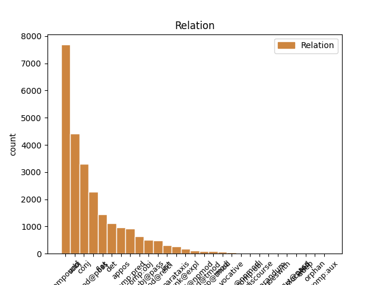
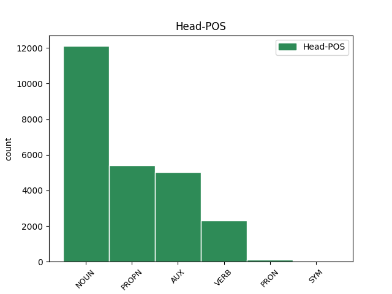
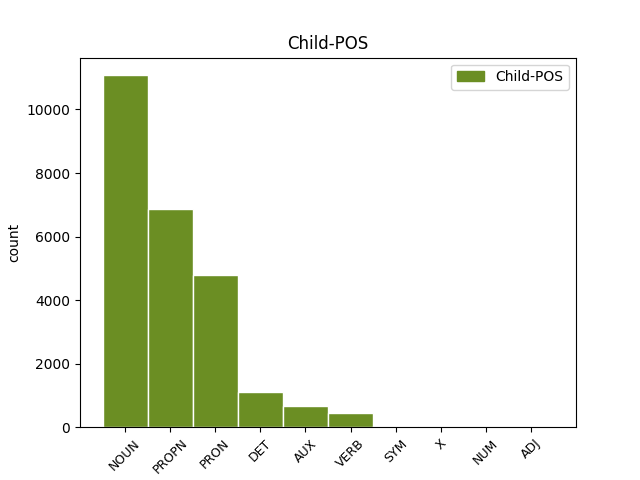

Distribution of features within this leaf



Agreement Rules sorted by frequency.
- When the dependent token is the compound(compound) of the head token, and the head token is NOUN
1 On _ _ _ _ 0 _ _ _
2 Monday _ _ _ _ 0 _ _ _
3 I _ _ _ _ 0 _ _ _
4 called _ _ _ _ 0 _ _ _
5 and _ _ _ _ 0 _ _ _
6 again _ _ _ _ 0 _ _ _
7 it _ _ _ _ 0 _ _ _
8 was _ _ _ _ 0 _ _ _
9 a _ _ _ _ 0 _ _ _
10 big _ _ _ _ 0 _ _ _
11 to to NOUN NN Number=Sing 13 compound _ SpaceAfter=No
12 - _ _ _ _ 0 _ _ _
13 do do NOUN NN Number=Sing 0 _ _ _
14 to _ _ _ _ 0 _ _ _
15 find _ _ _ _ 0 _ _ _
16 anyone _ _ _ _ 0 _ _ _
17 who _ _ _ _ 0 _ _ _
18 knew _ _ _ _ 0 _ _ _
19 anything _ _ _ _ 0 _ _ _
20 about _ _ _ _ 0 _ _ _
21 it _ _ _ _ 0 _ _ _
22 . _ _ _ _ 0 _ _ _
1 The _ _ _ _ 0 _ _ _
2 next _ _ _ _ 0 _ _ _
3 day _ _ _ _ 0 _ _ _
4 , _ _ _ _ 0 _ _ _
5 no _ _ _ _ 0 _ _ _
6 one _ _ _ _ 0 _ _ _
7 could _ _ _ _ 0 _ _ _
8 find _ _ _ _ 0 _ _ _
9 my _ _ _ _ 0 _ _ _
10 wheel _ _ _ _ 0 _ _ _
11 lock _ _ _ _ 0 _ _ _
12 and _ _ _ _ 0 _ _ _
13 that _ _ _ _ 0 _ _ _
14 particular _ _ _ _ 0 _ _ _
15 technician technician NOUN NN Number=Sing 16 subj _ _
16 was be AUX VBD Mood=Ind|Number=Sing|Person=3|Tense=Past|VerbForm=Fin 0 _ _ _
17 not _ _ _ _ 0 _ _ _
18 in _ _ _ _ 0 _ _ _
19 . _ _ _ _ 0 _ _ _
1 After _ _ _ _ 0 _ _ _
2 happily _ _ _ _ 0 _ _ _
3 visiting _ _ _ _ 0 _ _ _
4 Sear's Sears PROPN NNP Number=Sing|Typo=Yes 5 compound _ _
5 Automotives Automotives PROPN NNP Number=Sing 0 _ _ _
6 in _ _ _ _ 0 _ _ _
7 the _ _ _ _ 0 _ _ _
8 past _ _ _ _ 0 _ _ _
9 , _ _ _ _ 0 _ _ _
10 I _ _ _ _ 0 _ _ _
11 was _ _ _ _ 0 _ _ _
12 shocked _ _ _ _ 0 _ _ _
13 at _ _ _ _ 0 _ _ _
14 the _ _ _ _ 0 _ _ _
15 horrible _ _ _ _ 0 _ _ _
16 service _ _ _ _ 0 _ _ _
17 received _ _ _ _ 0 _ _ _
18 at _ _ _ _ 0 _ _ _
19 their _ _ _ _ 0 _ _ _
20 Greensboro _ _ _ _ 0 _ _ _
21 location _ _ _ _ 0 _ _ _
22 . _ _ _ _ 0 _ _ _
1 I _ _ _ _ 0 _ _ _
2 had _ _ _ _ 0 _ _ _
3 wanted _ _ _ _ 0 _ _ _
4 to _ _ _ _ 0 _ _ _
5 split _ _ _ _ 0 _ _ _
6 the _ _ _ _ 0 _ _ _
7 total _ _ _ _ 0 _ _ _
8 between _ _ _ _ 0 _ _ _
9 a _ _ _ _ 0 _ _ _
10 credit _ _ _ _ 0 _ _ _
11 card card NOUN NN Number=Sing 0 _ _ _
12 and _ _ _ _ 0 _ _ _
13 check _ _ _ _ 0 _ _ _
14 card card NOUN NN Number=Sing 11 conj _ _
15 since _ _ _ _ 0 _ _ _
16 I _ _ _ _ 0 _ _ _
17 was _ _ _ _ 0 _ _ _
18 being _ _ _ _ 0 _ _ _
19 reimbursed _ _ _ _ 0 _ _ _
20 for _ _ _ _ 0 _ _ _
21 the _ _ _ _ 0 _ _ _
22 tire _ _ _ _ 0 _ _ _
23 but _ _ _ _ 0 _ _ _
24 was _ _ _ _ 0 _ _ _
25 told _ _ _ _ 0 _ _ _
26 this _ _ _ _ 0 _ _ _
27 was _ _ _ _ 0 _ _ _
28 n't _ _ _ _ 0 _ _ _
29 possible _ _ _ _ 0 _ _ _
30 . _ _ _ _ 0 _ _ _
1 I _ _ _ _ 0 _ _ _
2 will _ _ _ _ 0 _ _ _
3 never _ _ _ _ 0 _ _ _
4 return _ _ _ _ 0 _ _ _
5 there _ _ _ _ 0 _ _ _
6 again _ _ _ _ 0 _ _ _
7 ( _ _ _ _ 0 _ _ _
8 and _ _ _ _ 0 _ _ _
9 now _ _ _ _ 0 _ _ _
10 have _ _ _ _ 0 _ _ _
11 some _ _ _ _ 0 _ _ _
12 serious _ _ _ _ 0 _ _ _
13 doubts _ _ _ _ 0 _ _ _
14 about _ _ _ _ 0 _ _ _
15 the _ _ _ _ 0 _ _ _
16 quality _ _ _ _ 0 _ _ _
17 of _ _ _ _ 0 _ _ _
18 work _ _ _ _ 0 _ _ _
19 they _ _ _ _ 0 _ _ _
20 actually _ _ _ _ 0 _ _ _
21 performed _ _ _ _ 0 _ _ _
22 on _ _ _ _ 0 _ _ _
23 my my PRON PRP$ Number=Sing|Person=1|Poss=Yes|PronType=Prs 24 mod@poss _ _
24 car car NOUN NN Number=Sing 0 _ _ _
25 ) _ _ _ _ 0 _ _ _
26 . _ _ _ _ 0 _ _ _
1 I _ _ _ _ 0 _ _ _
2 am _ _ _ _ 0 _ _ _
3 not _ _ _ _ 0 _ _ _
4 sure _ _ _ _ 0 _ _ _
5 about _ _ _ _ 0 _ _ _
6 the _ _ _ _ 0 _ _ _
7 quality _ _ _ _ 0 _ _ _
8 of _ _ _ _ 0 _ _ _
9 the _ _ _ _ 0 _ _ _
10 other _ _ _ _ 0 _ _ _
11 doctors _ _ _ _ 0 _ _ _
12 there _ _ _ _ 0 _ _ _
13 , _ _ _ _ 0 _ _ _
14 but _ _ _ _ 0 _ _ _
15 i _ _ _ _ 0 _ _ _
16 do _ _ _ _ 0 _ _ _
17 know _ _ _ _ 0 _ _ _
18 from _ _ _ _ 0 _ _ _
19 personal _ _ _ _ 0 _ _ _
20 experience _ _ _ _ 0 _ _ _
21 that _ _ _ _ 0 _ _ _
22 Dr. Dr. PROPN NNP Number=Sing 0 _ _ _
23 Christopher _ _ _ _ 0 _ _ _
24 T. _ _ _ _ 0 _ _ _
25 Strzalka Strzalka PROPN NNP Number=Sing 22 flat _ _
26 is _ _ _ _ 0 _ _ _
27 not _ _ _ _ 0 _ _ _
28 a _ _ _ _ 0 _ _ _
29 man _ _ _ _ 0 _ _ _
30 of _ _ _ _ 0 _ _ _
31 his _ _ _ _ 0 _ _ _
32 word _ _ _ _ 0 _ _ _
33 , _ _ _ _ 0 _ _ _
34 and _ _ _ _ 0 _ _ _
35 is _ _ _ _ 0 _ _ _
36 also _ _ _ _ 0 _ _ _
37 very _ _ _ _ 0 _ _ _
38 CRUEL _ _ _ _ 0 _ _ _
39 AND _ _ _ _ 0 _ _ _
40 UNCARING _ _ _ _ 0 _ _ _
41 !! _ _ _ _ 0 _ _ _
1 Unless _ _ _ _ 0 _ _ _
2 you _ _ _ _ 0 _ _ _
3 want _ _ _ _ 0 _ _ _
4 to _ _ _ _ 0 _ _ _
5 take _ _ _ _ 0 _ _ _
6 the _ _ _ _ 0 _ _ _
7 " _ _ _ _ 0 _ _ _
8 tell _ _ _ _ 0 _ _ _
9 the _ _ _ _ 0 _ _ _
10 customer _ _ _ _ 0 _ _ _
11 how _ _ _ _ 0 _ _ _
12 wrong _ _ _ _ 0 _ _ _
13 she she PRON PRP Case=Nom|Gender=Fem|Number=Sing|Person=3|PronType=Prs 14 subj _ _
14 is be VERB VBZ Mood=Ind|Number=Sing|Person=3|Tense=Pres|VerbForm=Fin 0 _ _ _
15 and _ _ _ _ 0 _ _ _
16 try _ _ _ _ 0 _ _ _
17 and _ _ _ _ 0 _ _ _
18 force _ _ _ _ 0 _ _ _
19 her _ _ _ _ 0 _ _ _
20 into _ _ _ _ 0 _ _ _
21 a _ _ _ _ 0 _ _ _
22 dress _ _ _ _ 0 _ _ _
23 she _ _ _ _ 0 _ _ _
24 's _ _ _ _ 0 _ _ _
25 obviously _ _ _ _ 0 _ _ _
26 not _ _ _ _ 0 _ _ _
27 loving _ _ _ _ 0 _ _ _
28 " _ _ _ _ 0 _ _ _
29 approach _ _ _ _ 0 _ _ _
30 which _ _ _ _ 0 _ _ _
31 will _ _ _ _ 0 _ _ _
32 likely _ _ _ _ 0 _ _ _
33 get _ _ _ _ 0 _ _ _
34 you _ _ _ _ 0 _ _ _
35 ... _ _ _ _ 0 _ _ _
36 uh _ _ _ _ 0 _ _ _
37 ... _ _ _ _ 0 _ _ _
38 nowhere _ _ _ _ 0 _ _ _
39 . _ _ _ _ 0 _ _ _
1 Supposedly _ _ _ _ 0 _ _ _
2 they _ _ _ _ 0 _ _ _
3 will _ _ _ _ 0 _ _ _
4 be _ _ _ _ 0 _ _ _
5 holding _ _ _ _ 0 _ _ _
6 it _ _ _ _ 0 _ _ _
7 for _ _ _ _ 0 _ _ _
8 me _ _ _ _ 0 _ _ _
9 this this DET DT Number=Sing|PronType=Dem 10 det _ _
10 evening evening NOUN NN Number=Sing 0 _ _ _
11 , _ _ _ _ 0 _ _ _
12 but _ _ _ _ 0 _ _ _
13 I _ _ _ _ 0 _ _ _
14 'm _ _ _ _ 0 _ _ _
15 sure _ _ _ _ 0 _ _ _
16 that _ _ _ _ 0 _ _ _
17 will _ _ _ _ 0 _ _ _
18 also _ _ _ _ 0 _ _ _
19 be _ _ _ _ 0 _ _ _
20 a _ _ _ _ 0 _ _ _
21 huge _ _ _ _ 0 _ _ _
22 ordeal _ _ _ _ 0 _ _ _
23 . _ _ _ _ 0 _ _ _
1 On _ _ _ _ 0 _ _ _
2 Monday _ _ _ _ 0 _ _ _
3 I _ _ _ _ 0 _ _ _
4 called _ _ _ _ 0 _ _ _
5 and _ _ _ _ 0 _ _ _
6 again _ _ _ _ 0 _ _ _
7 it _ _ _ _ 0 _ _ _
8 was be AUX VBD Mood=Ind|Number=Sing|Person=3|Tense=Past|VerbForm=Fin 0 _ _ _
9 a _ _ _ _ 0 _ _ _
10 big _ _ _ _ 0 _ _ _
11 to _ _ _ _ 0 _ _ _
12 - _ _ _ _ 0 _ _ _
13 do do NOUN NN Number=Sing 8 comp:pred _ _
14 to _ _ _ _ 0 _ _ _
15 find _ _ _ _ 0 _ _ _
16 anyone _ _ _ _ 0 _ _ _
17 who _ _ _ _ 0 _ _ _
18 knew _ _ _ _ 0 _ _ _
19 anything _ _ _ _ 0 _ _ _
20 about _ _ _ _ 0 _ _ _
21 it _ _ _ _ 0 _ _ _
22 . _ _ _ _ 0 _ _ _
1 17th _ _ _ _ 0 _ _ _
2 , _ _ _ _ 0 _ _ _
3 like _ _ _ _ 0 _ _ _
4 over _ _ _ _ 0 _ _ _
5 by _ _ _ _ 0 _ _ _
6 16th 16th PROPN NNP Number=Sing 0 _ _ _
7 and _ _ _ _ 0 _ _ _
8 15th 15th PROPN NNP Number=Sing 6 conj _ _
9 YES _ _ _ _ 0 _ _ _
10 , _ _ _ _ 0 _ _ _
11 I _ _ _ _ 0 _ _ _
12 say _ _ _ _ 0 _ _ _
13 , _ _ _ _ 0 _ _ _
14 one _ _ _ _ 0 _ _ _
15 mile _ _ _ _ 0 _ _ _
16 west _ _ _ _ 0 _ _ _
17 of _ _ _ _ 0 _ _ _
18 you _ _ _ _ 0 _ _ _
19 . _ _ _ _ 0 _ _ _
1 A _ _ _ _ 0 _ _ _
2 few _ _ _ _ 0 _ _ _
3 minutes _ _ _ _ 0 _ _ _
4 after _ _ _ _ 0 _ _ _
5 I _ _ _ _ 0 _ _ _
6 left _ _ _ _ 0 _ _ _
7 , _ _ _ _ 0 _ _ _
8 I I PRON PRP Case=Nom|Number=Sing|Person=1|PronType=Prs 9 subj@pass _ _
9 was be AUX VBD Mood=Ind|Number=Sing|Person=1|Tense=Past|VerbForm=Fin 0 _ _ _
10 called _ _ _ _ 0 _ _ _
11 and _ _ _ _ 0 _ _ _
12 informed _ _ _ _ 0 _ _ _
13 that _ _ _ _ 0 _ _ _
14 " _ _ _ _ 0 _ _ _
15 I _ _ _ _ 0 _ _ _
16 " _ _ _ _ 0 _ _ _
17 left _ _ _ _ 0 _ _ _
18 my _ _ _ _ 0 _ _ _
19 wheel _ _ _ _ 0 _ _ _
20 lock _ _ _ _ 0 _ _ _
21 ( _ _ _ _ 0 _ _ _
22 which _ _ _ _ 0 _ _ _
23 they _ _ _ _ 0 _ _ _
24 should _ _ _ _ 0 _ _ _
25 have _ _ _ _ 0 _ _ _
26 left _ _ _ _ 0 _ _ _
27 in _ _ _ _ 0 _ _ _
28 the _ _ _ _ 0 _ _ _
29 car _ _ _ _ 0 _ _ _
30 ) _ _ _ _ 0 _ _ _
31 . _ _ _ _ 0 _ _ _
1 I _ _ _ _ 0 _ _ _
2 guess _ _ _ _ 0 _ _ _
3 that _ _ _ _ 0 _ _ _
4 tells tell VERB VBZ Mood=Ind|Number=Sing|Person=3|Tense=Pres|VerbForm=Fin 0 _ _ _
5 you _ _ _ _ 0 _ _ _
6 a _ _ _ _ 0 _ _ _
7 lot lot NOUN NN Number=Sing 4 comp:obj _ SpaceAfter=No
8 . _ _ _ _ 0 _ _ _
1 My _ _ _ _ 0 _ _ _
2 heart _ _ _ _ 0 _ _ _
3 pounded _ _ _ _ 0 _ _ _
4 as _ _ _ _ 0 _ _ _
5 I _ _ _ _ 0 _ _ _
6 walked _ _ _ _ 0 _ _ _
7 down _ _ _ _ 0 _ _ _
8 and _ _ _ _ 0 _ _ _
9 pounded _ _ _ _ 0 _ _ _
10 even _ _ _ _ 0 _ _ _
11 faster _ _ _ _ 0 _ _ _
12 upon _ _ _ _ 0 _ _ _
13 seeing _ _ _ _ 0 _ _ _
14 Gerry _ _ _ _ 0 _ _ _
15 in _ _ _ _ 0 _ _ _
16 an _ _ _ _ 0 _ _ _
17 SUV SUV PROPN NNP Number=Sing 0 _ _ _
18 - _ _ _ _ 0 _ _ _
19 Lexus Lexus PROPN NNP Number=Sing 17 appos _ SpaceAfter=No
20 ! _ _ _ _ 0 _ _ _
1 The _ _ _ _ 0 _ _ _
2 guy guy NOUN NN Number=Sing 0 _ _ _
3 who _ _ _ _ 0 _ _ _
4 was _ _ _ _ 0 _ _ _
5 cutting _ _ _ _ 0 _ _ _
6 me _ _ _ _ 0 _ _ _
7 the _ _ _ _ 0 _ _ _
8 deals _ _ _ _ 0 _ _ _
9 and _ _ _ _ 0 _ _ _
10 getting _ _ _ _ 0 _ _ _
11 me _ _ _ _ 0 _ _ _
12 the _ _ _ _ 0 _ _ _
13 furniture _ _ _ _ 0 _ _ _
14 quickly _ _ _ _ 0 _ _ _
15 , _ _ _ _ 0 _ _ _
16 Ahmed Ahmed PROPN NNP Number=Sing 2 appos _ SpaceAfter=No
17 , _ _ _ _ 0 _ _ _
18 was _ _ _ _ 0 _ _ _
19 nice _ _ _ _ 0 _ _ _
20 and _ _ _ _ 0 _ _ _
21 mostly _ _ _ _ 0 _ _ _
22 professional _ _ _ _ 0 _ _ _
23 , _ _ _ _ 0 _ _ _
24 except _ _ _ _ 0 _ _ _
25 the _ _ _ _ 0 _ _ _
26 semi-sketchiness _ _ _ _ 0 _ _ _
27 . _ _ _ _ 0 _ _ _
1 Unless _ _ _ _ 0 _ _ _
2 you _ _ _ _ 0 _ _ _
3 want _ _ _ _ 0 _ _ _
4 to _ _ _ _ 0 _ _ _
5 take _ _ _ _ 0 _ _ _
6 the _ _ _ _ 0 _ _ _
7 " _ _ _ _ 0 _ _ _
8 tell _ _ _ _ 0 _ _ _
9 the _ _ _ _ 0 _ _ _
10 customer _ _ _ _ 0 _ _ _
11 how _ _ _ _ 0 _ _ _
12 wrong _ _ _ _ 0 _ _ _
13 she _ _ _ _ 0 _ _ _
14 is _ _ _ _ 0 _ _ _
15 and _ _ _ _ 0 _ _ _
16 try _ _ _ _ 0 _ _ _
17 and _ _ _ _ 0 _ _ _
18 force _ _ _ _ 0 _ _ _
19 her _ _ _ _ 0 _ _ _
20 into _ _ _ _ 0 _ _ _
21 a _ _ _ _ 0 _ _ _
22 dress dress NOUN NN Number=Sing 0 _ _ _
23 she _ _ _ _ 0 _ _ _
24 's be AUX VBZ Mood=Ind|Number=Sing|Person=3|Tense=Pres|VerbForm=Fin 22 mod@relcl _ _
25 obviously _ _ _ _ 0 _ _ _
26 not _ _ _ _ 0 _ _ _
27 loving _ _ _ _ 0 _ _ _
28 " _ _ _ _ 0 _ _ _
29 approach _ _ _ _ 0 _ _ _
30 which _ _ _ _ 0 _ _ _
31 will _ _ _ _ 0 _ _ _
32 likely _ _ _ _ 0 _ _ _
33 get _ _ _ _ 0 _ _ _
34 you _ _ _ _ 0 _ _ _
35 ... _ _ _ _ 0 _ _ _
36 uh _ _ _ _ 0 _ _ _
37 ... _ _ _ _ 0 _ _ _
38 nowhere _ _ _ _ 0 _ _ _
39 . _ _ _ _ 0 _ _ _
1 However _ _ _ _ 0 _ _ _
2 , _ _ _ _ 0 _ _ _
3 when _ _ _ _ 0 _ _ _
4 he _ _ _ _ 0 _ _ _
5 printed _ _ _ _ 0 _ _ _
6 out _ _ _ _ 0 _ _ _
7 the _ _ _ _ 0 _ _ _
8 service _ _ _ _ 0 _ _ _
9 quote _ _ _ _ 0 _ _ _
10 , _ _ _ _ 0 _ _ _
11 I _ _ _ _ 0 _ _ _
12 could _ _ _ _ 0 _ _ _
13 see _ _ _ _ 0 _ _ _
14 that _ _ _ _ 0 _ _ _
15 it _ _ _ _ 0 _ _ _
16 was be AUX VBD Mood=Ind|Number=Sing|Person=3|Tense=Past|VerbForm=Fin 0 _ _ _
17 NOT _ _ _ _ 0 _ _ _
18 the _ _ _ _ 0 _ _ _
19 correct _ _ _ _ 0 _ _ _
20 tire _ _ _ _ 0 _ _ _
21 , _ _ _ _ 0 _ _ _
22 and _ _ _ _ 0 _ _ _
23 was be AUX VBD Mood=Ind|Number=Sing|Person=3|Tense=Past|VerbForm=Fin 16 conj _ _
24 not _ _ _ _ 0 _ _ _
25 even _ _ _ _ 0 _ _ _
26 an _ _ _ _ 0 _ _ _
27 appropriate _ _ _ _ 0 _ _ _
28 tire _ _ _ _ 0 _ _ _
29 for _ _ _ _ 0 _ _ _
30 my _ _ _ _ 0 _ _ _
31 car _ _ _ _ 0 _ _ _
32 model _ _ _ _ 0 _ _ _
33 . _ _ _ _ 0 _ _ _
1 We _ _ _ _ 0 _ _ _
2 were _ _ _ _ 0 _ _ _
3 introduced _ _ _ _ 0 _ _ _
4 to _ _ _ _ 0 _ _ _
5 Bistro _ _ _ _ 0 _ _ _
6 Tallulah _ _ _ _ 0 _ _ _
7 by _ _ _ _ 0 _ _ _
8 traveler _ _ _ _ 0 _ _ _
9 - _ _ _ _ 0 _ _ _
10 professional _ _ _ _ 0 _ _ _
11 diner _ _ _ _ 0 _ _ _
12 who _ _ _ _ 0 _ _ _
13 happens _ _ _ _ 0 _ _ _
14 to _ _ _ _ 0 _ _ _
15 own _ _ _ _ 0 _ _ _
16 the _ _ _ _ 0 _ _ _
17 Adelphi _ _ _ _ 0 _ _ _
18 Hotel _ _ _ _ 0 _ _ _
19 and _ _ _ _ 0 _ _ _
20 travels _ _ _ _ 0 _ _ _
21 the _ _ _ _ 0 _ _ _
22 world _ _ _ _ 0 _ _ _
23 -- _ _ _ _ 0 _ _ _
24 and _ _ _ _ 0 _ _ _
25 residing _ _ _ _ 0 _ _ _
26 in _ _ _ _ 0 _ _ _
27 Paris Paris PROPN NNP Number=Sing 0 _ _ _
28 , _ _ _ _ 0 _ _ _
29 London _ _ _ _ 0 _ _ _
30 , _ _ _ _ 0 _ _ _
31 New _ _ _ _ 0 _ _ _
32 York York PROPN NNP Number=Sing 27 list _ _
33 the _ _ _ _ 0 _ _ _
34 rest _ _ _ _ 0 _ _ _
35 of _ _ _ _ 0 _ _ _
36 the _ _ _ _ 0 _ _ _
37 year _ _ _ _ 0 _ _ _
38 . _ _ _ _ 0 _ _ _
1 On _ _ _ _ 0 _ _ _
2 Monday _ _ _ _ 0 _ _ _
3 I _ _ _ _ 0 _ _ _
4 called _ _ _ _ 0 _ _ _
5 and _ _ _ _ 0 _ _ _
6 again _ _ _ _ 0 _ _ _
7 it it PRON PRP Case=Nom|Gender=Neut|Number=Sing|Person=3|PronType=Prs 8 unk@expl _ _
8 was be AUX VBD Mood=Ind|Number=Sing|Person=3|Tense=Past|VerbForm=Fin 0 _ _ _
9 a _ _ _ _ 0 _ _ _
10 big _ _ _ _ 0 _ _ _
11 to _ _ _ _ 0 _ _ _
12 - _ _ _ _ 0 _ _ _
13 do _ _ _ _ 0 _ _ _
14 to _ _ _ _ 0 _ _ _
15 find _ _ _ _ 0 _ _ _
16 anyone _ _ _ _ 0 _ _ _
17 who _ _ _ _ 0 _ _ _
18 knew _ _ _ _ 0 _ _ _
19 anything _ _ _ _ 0 _ _ _
20 about _ _ _ _ 0 _ _ _
21 it _ _ _ _ 0 _ _ _
22 . _ _ _ _ 0 _ _ _
1 If _ _ _ _ 0 _ _ _
2 you _ _ _ _ 0 _ _ _
3 want _ _ _ _ 0 _ _ _
4 a _ _ _ _ 0 _ _ _
5 doctor _ _ _ _ 0 _ _ _
6 who _ _ _ _ 0 _ _ _
7 will _ _ _ _ 0 _ _ _
8 lie _ _ _ _ 0 _ _ _
9 to _ _ _ _ 0 _ _ _
10 you _ _ _ _ 0 _ _ _
11 and _ _ _ _ 0 _ _ _
12 say _ _ _ _ 0 _ _ _
13 he _ _ _ _ 0 _ _ _
14 will _ _ _ _ 0 _ _ _
15 operate _ _ _ _ 0 _ _ _
16 and _ _ _ _ 0 _ _ _
17 then _ _ _ _ 0 _ _ _
18 change _ _ _ _ 0 _ _ _
19 his _ _ _ _ 0 _ _ _
20 mind _ _ _ _ 0 _ _ _
21 , _ _ _ _ 0 _ _ _
22 and _ _ _ _ 0 _ _ _
23 not _ _ _ _ 0 _ _ _
24 know _ _ _ _ 0 _ _ _
25 what _ _ _ _ 0 _ _ _
26 he _ _ _ _ 0 _ _ _
27 is _ _ _ _ 0 _ _ _
28 talking _ _ _ _ 0 _ _ _
29 about _ _ _ _ 0 _ _ _
30 when _ _ _ _ 0 _ _ _
31 he _ _ _ _ 0 _ _ _
32 recommends recommend VERB VBZ Mood=Ind|Number=Sing|Person=3|Tense=Pres|VerbForm=Fin 0 _ _ _
33 procedures _ _ _ _ 0 _ _ _
34 at _ _ _ _ 0 _ _ _
35 other _ _ _ _ 0 _ _ _
36 hospitals _ _ _ _ 0 _ _ _
37 and _ _ _ _ 0 _ _ _
38 says say VERB VBZ Mood=Ind|Number=Sing|Person=3|Tense=Pres|VerbForm=Fin 32 conj _ _
39 they _ _ _ _ 0 _ _ _
40 are _ _ _ _ 0 _ _ _
41 what _ _ _ _ 0 _ _ _
42 you _ _ _ _ 0 _ _ _
43 need _ _ _ _ 0 _ _ _
44 , _ _ _ _ 0 _ _ _
45 when _ _ _ _ 0 _ _ _
46 they _ _ _ _ 0 _ _ _
47 will _ _ _ _ 0 _ _ _
48 not _ _ _ _ 0 _ _ _
49 work _ _ _ _ 0 _ _ _
50 for _ _ _ _ 0 _ _ _
51 you _ _ _ _ 0 _ _ _
52 , _ _ _ _ 0 _ _ _
53 go _ _ _ _ 0 _ _ _
54 to _ _ _ _ 0 _ _ _
55 this _ _ _ _ 0 _ _ _
56 doctor _ _ _ _ 0 _ _ _
57 ... _ _ _ _ 0 _ _ _
58 he _ _ _ _ 0 _ _ _
59 is _ _ _ _ 0 _ _ _
60 the _ _ _ _ 0 _ _ _
61 one _ _ _ _ 0 _ _ _
62 for _ _ _ _ 0 _ _ _
63 you _ _ _ _ 0 _ _ _
64 . _ _ _ _ 0 _ _ _
1 YES _ _ _ _ 0 _ _ _
2 I _ _ _ _ 0 _ _ _
3 am be AUX VBP Mood=Ind|Number=Sing|Person=1|Tense=Pres|VerbForm=Fin 0 _ _ _
4 sure _ _ _ _ 0 _ _ _
5 , _ _ _ _ 0 _ _ _
6 well _ _ _ _ 0 _ _ _
7 , _ _ _ _ 0 _ _ _
8 she _ _ _ _ 0 _ _ _
9 says say VERB VBZ Mood=Ind|Number=Sing|Person=3|Tense=Pres|VerbForm=Fin 3 parataxis _ SpaceAfter=No
10 , _ _ _ _ 0 _ _ _
11 is _ _ _ _ 0 _ _ _
12 that _ _ _ _ 0 _ _ _
13 ON _ _ _ _ 0 _ _ _
14 17th _ _ _ _ 0 _ _ _
15 STREET _ _ _ _ 0 _ _ _
16 . _ _ _ _ 0 _ _ _
1 Also _ _ _ _ 0 _ _ _
2 , _ _ _ _ 0 _ _ _
3 a _ _ _ _ 0 _ _ _
4 week week NOUN NN Number=Sing 7 mod@npmod _ _
5 after _ _ _ _ 0 _ _ _
6 the _ _ _ _ 0 _ _ _
7 work work NOUN NN Number=Sing 0 _ _ _
8 , _ _ _ _ 0 _ _ _
9 Phet _ _ _ _ 0 _ _ _
10 called _ _ _ _ 0 _ _ _
11 me _ _ _ _ 0 _ _ _
12 up _ _ _ _ 0 _ _ _
13 to _ _ _ _ 0 _ _ _
14 see _ _ _ _ 0 _ _ _
15 how _ _ _ _ 0 _ _ _
16 my _ _ _ _ 0 _ _ _
17 car _ _ _ _ 0 _ _ _
18 was _ _ _ _ 0 _ _ _
19 running _ _ _ _ 0 _ _ _
20 and _ _ _ _ 0 _ _ _
21 to _ _ _ _ 0 _ _ _
22 let _ _ _ _ 0 _ _ _
23 me _ _ _ _ 0 _ _ _
24 know _ _ _ _ 0 _ _ _
25 that _ _ _ _ 0 _ _ _
26 they _ _ _ _ 0 _ _ _
27 had _ _ _ _ 0 _ _ _
28 accidentally _ _ _ _ 0 _ _ _
29 overcharged _ _ _ _ 0 _ _ _
30 me _ _ _ _ 0 _ _ _
31 for _ _ _ _ 0 _ _ _
32 part _ _ _ _ 0 _ _ _
33 of _ _ _ _ 0 _ _ _
34 the _ _ _ _ 0 _ _ _
35 work _ _ _ _ 0 _ _ _
36 and _ _ _ _ 0 _ _ _
37 wanted _ _ _ _ 0 _ _ _
38 to _ _ _ _ 0 _ _ _
39 give _ _ _ _ 0 _ _ _
40 me _ _ _ _ 0 _ _ _
41 a _ _ _ _ 0 _ _ _
42 refund _ _ _ _ 0 _ _ _
43 for _ _ _ _ 0 _ _ _
44 that _ _ _ _ 0 _ _ _
45 amount _ _ _ _ 0 _ _ _
46 . _ _ _ _ 0 _ _ _
1 A _ _ _ _ 0 _ _ _
2 great _ _ _ _ 0 _ _ _
3 breakfast breakfast NOUN NN Number=Sing 0 _ _ _
4 which _ _ _ _ 0 _ _ _
5 was _ _ _ _ 0 _ _ _
6 included _ _ _ _ 0 _ _ _
7 every _ _ _ _ 0 _ _ _
8 morning morning NOUN NN Number=Sing 3 mod@tmod _ _
9 until _ _ _ _ 0 _ _ _
10 9:30 _ _ _ _ 0 _ _ _
11 am _ _ _ _ 0 _ _ _
12 ; _ _ _ _ 0 _ _ _
13 yummy _ _ _ _ 0 _ _ _
14 fresh _ _ _ _ 0 _ _ _
15 Parisian _ _ _ _ 0 _ _ _
16 croissants _ _ _ _ 0 _ _ _
17 . _ _ _ _ 0 _ _ _
1 Derrick _ _ _ _ 0 _ _ _
2 did _ _ _ _ 0 _ _ _
3 a _ _ _ _ 0 _ _ _
4 terrible _ _ _ _ 0 _ _ _
5 job _ _ _ _ 0 _ _ _
6 , _ _ _ _ 0 _ _ _
7 was be AUX VBD Mood=Ind|Number=Sing|Person=3|Tense=Past|VerbForm=Fin 0 _ _ _
8 a _ _ _ _ 0 _ _ _
9 complete _ _ _ _ 0 _ _ _
10 jerk _ _ _ _ 0 _ _ _
11 the _ _ _ _ 0 _ _ _
12 entire _ _ _ _ 0 _ _ _
13 time time NOUN NN Number=Sing 7 udep@tmod _ SpaceAfter=No
14 , _ _ _ _ 0 _ _ _
15 and _ _ _ _ 0 _ _ _
16 I _ _ _ _ 0 _ _ _
17 had _ _ _ _ 0 _ _ _
18 no _ _ _ _ 0 _ _ _
19 warning _ _ _ _ 0 _ _ _
20 as _ _ _ _ 0 _ _ _
21 to _ _ _ _ 0 _ _ _
22 the _ _ _ _ 0 _ _ _
23 price _ _ _ _ 0 _ _ _
24 . _ _ _ _ 0 _ _ _
1 However _ _ _ _ 0 _ _ _
2 upon _ _ _ _ 0 _ _ _
3 our _ _ _ _ 0 _ _ _
4 arrival _ _ _ _ 0 _ _ _
5 no _ _ _ _ 0 _ _ _
6 one one NOUN NN Number=Sing 0 _ _ _
7 there _ _ _ _ 0 _ _ _
8 ( _ _ _ _ 0 _ _ _
9 the _ _ _ _ 0 _ _ _
10 inn _ _ _ _ 0 _ _ _
11 was be AUX VBD Mood=Ind|Number=Sing|Person=3|Tense=Past|VerbForm=Fin 6 parataxis _ _
12 open _ _ _ _ 0 _ _ _
13 ) _ _ _ _ 0 _ _ _
14 . _ _ _ _ 0 _ _ _
1 Ok _ _ _ _ 0 _ _ _
2 I _ _ _ _ 0 _ _ _
3 am _ _ _ _ 0 _ _ _
4 a _ _ _ _ 0 _ _ _
5 New _ _ _ _ 0 _ _ _
6 Yorker Yorker PROPN NNP Number=Sing 0 _ _ _
7 who _ _ _ _ 0 _ _ _
8 has have AUX VBZ Mood=Ind|Number=Sing|Person=3|Tense=Pres|VerbForm=Fin 6 mod@relcl _ _
9 been _ _ _ _ 0 _ _ _
10 going _ _ _ _ 0 _ _ _
11 to _ _ _ _ 0 _ _ _
12 school _ _ _ _ 0 _ _ _
13 in _ _ _ _ 0 _ _ _
14 Oxford _ _ _ _ 0 _ _ _
15 , _ _ _ _ 0 _ _ _
16 England _ _ _ _ 0 _ _ _
17 . _ _ _ _ 0 _ _ _
1 17th 17th PROPN NNP Number=Sing 0 _ _ _
2 , _ _ _ _ 0 _ _ _
3 like _ _ _ _ 0 _ _ _
4 over _ _ _ _ 0 _ _ _
5 by _ _ _ _ 0 _ _ _
6 16th _ _ _ _ 0 _ _ _
7 and _ _ _ _ 0 _ _ _
8 15th _ _ _ _ 0 _ _ _
9 YES _ _ _ _ 0 _ _ _
10 , _ _ _ _ 0 _ _ _
11 I _ _ _ _ 0 _ _ _
12 say _ _ _ _ 0 _ _ _
13 , _ _ _ _ 0 _ _ _
14 one _ _ _ _ 0 _ _ _
15 mile mile NOUN NN Number=Sing 1 parataxis _ _
16 west _ _ _ _ 0 _ _ _
17 of _ _ _ _ 0 _ _ _
18 you _ _ _ _ 0 _ _ _
19 . _ _ _ _ 0 _ _ _
1 I I PRON PRP Case=Nom|Number=Sing|Person=1|PronType=Prs 0 _ _ _
2 , _ _ _ _ 0 _ _ _
3 nor _ _ _ _ 0 _ _ _
4 anyone anyone PRON NN Number=Sing 1 conj _ _
5 else _ _ _ _ 0 _ _ _
6 in _ _ _ _ 0 _ _ _
7 my _ _ _ _ 0 _ _ _
8 family _ _ _ _ 0 _ _ _
9 , _ _ _ _ 0 _ _ _
10 will _ _ _ _ 0 _ _ _
11 ever _ _ _ _ 0 _ _ _
12 go _ _ _ _ 0 _ _ _
13 to _ _ _ _ 0 _ _ _
14 Sun _ _ _ _ 0 _ _ _
15 Devil _ _ _ _ 0 _ _ _
16 Auto _ _ _ _ 0 _ _ _
17 again _ _ _ _ 0 _ _ _
18 . _ _ _ _ 0 _ _ _
1 Long _ _ _ _ 0 _ _ _
2 Lines line NOUN NNS Number=Plur 0 _ _ _
3 , _ _ _ _ 0 _ _ _
4 Silly _ _ _ _ 0 _ _ _
5 Rules rule NOUN NNS Number=Plur 2 list _ SpaceAfter=No
6 , _ _ _ _ 0 _ _ _
7 Rude _ _ _ _ 0 _ _ _
8 Staff _ _ _ _ 0 _ _ _
9 , _ _ _ _ 0 _ _ _
10 Ok _ _ _ _ 0 _ _ _
11 Food _ _ _ _ 0 _ _ _
1 Dessert _ _ _ _ 0 _ _ _
2 was be VERB VBD Mood=Ind|Number=Sing|Person=3|Tense=Past|VerbForm=Fin 0 _ _ _
3 ... _ _ _ _ 0 _ _ _
4 hmmm _ _ _ _ 0 _ _ _
5 , _ _ _ _ 0 _ _ _
6 that _ _ _ _ 0 _ _ _
7 's be AUX VBZ Mood=Ind|Number=Sing|Person=3|Tense=Pres|VerbForm=Fin 2 parataxis _ _
8 interesting _ _ _ _ 0 _ _ _
9 , _ _ _ _ 0 _ _ _
10 I _ _ _ _ 0 _ _ _
11 do _ _ _ _ 0 _ _ _
12 n't _ _ _ _ 0 _ _ _
13 even _ _ _ _ 0 _ _ _
14 remember _ _ _ _ 0 _ _ _
15 dessert _ _ _ _ 0 _ _ _
16 . _ _ _ _ 0 _ _ _
1 Anyhow _ _ _ _ 0 _ _ _
2 , _ _ _ _ 0 _ _ _
3 after _ _ _ _ 0 _ _ _
4 reading _ _ _ _ 0 _ _ _
5 some _ _ _ _ 0 _ _ _
6 of _ _ _ _ 0 _ _ _
7 the _ _ _ _ 0 _ _ _
8 other _ _ _ _ 0 _ _ _
9 reviews _ _ _ _ 0 _ _ _
10 it it PRON PRP Case=Nom|Gender=Neut|Number=Sing|Person=3|PronType=Prs 11 unk@expl _ _
11 seems seem VERB VBZ Mood=Ind|Number=Sing|Person=3|Tense=Pres|VerbForm=Fin 0 _ _ _
12 like _ _ _ _ 0 _ _ _
13 some _ _ _ _ 0 _ _ _
14 of _ _ _ _ 0 _ _ _
15 the _ _ _ _ 0 _ _ _
16 other _ _ _ _ 0 _ _ _
17 reviewers _ _ _ _ 0 _ _ _
18 are _ _ _ _ 0 _ _ _
19 expecting _ _ _ _ 0 _ _ _
20 mircles _ _ _ _ 0 _ _ _
21 . _ _ _ _ 0 _ _ _
1 After _ _ _ _ 0 _ _ _
2 complaining _ _ _ _ 0 _ _ _
3 on _ _ _ _ 0 _ _ _
4 September September PROPN NNP Number=Sing 0 _ _ _
5 10th 10th NOUN NN Number=Sing 4 mod _ _
6 to _ _ _ _ 0 _ _ _
7 National _ _ _ _ 0 _ _ _
8 Home _ _ _ _ 0 _ _ _
9 Furnishings _ _ _ _ 0 _ _ _
10 , _ _ _ _ 0 _ _ _
11 Boyles _ _ _ _ 0 _ _ _
12 , _ _ _ _ 0 _ _ _
13 the _ _ _ _ 0 _ _ _
14 Hickory _ _ _ _ 0 _ _ _
15 Furniture _ _ _ _ 0 _ _ _
16 Mart _ _ _ _ 0 _ _ _
17 and _ _ _ _ 0 _ _ _
18 Home _ _ _ _ 0 _ _ _
19 Delivery _ _ _ _ 0 _ _ _
20 Service _ _ _ _ 0 _ _ _
21 the _ _ _ _ 0 _ _ _
22 latter _ _ _ _ 0 _ _ _
23 finally _ _ _ _ 0 _ _ _
24 called _ _ _ _ 0 _ _ _
25 me _ _ _ _ 0 _ _ _
26 back _ _ _ _ 0 _ _ _
27 and _ _ _ _ 0 _ _ _
28 said _ _ _ _ 0 _ _ _
29 they _ _ _ _ 0 _ _ _
30 would _ _ _ _ 0 _ _ _
31 be _ _ _ _ 0 _ _ _
32 up _ _ _ _ 0 _ _ _
33 to _ _ _ _ 0 _ _ _
34 pick _ _ _ _ 0 _ _ _
35 the _ _ _ _ 0 _ _ _
36 dresser _ _ _ _ 0 _ _ _
37 and _ _ _ _ 0 _ _ _
38 chest _ _ _ _ 0 _ _ _
39 of _ _ _ _ 0 _ _ _
40 drawers _ _ _ _ 0 _ _ _
41 at _ _ _ _ 0 _ _ _
42 some _ _ _ _ 0 _ _ _
43 future _ _ _ _ 0 _ _ _
44 point _ _ _ _ 0 _ _ _
45 and _ _ _ _ 0 _ _ _
46 at _ _ _ _ 0 _ _ _
47 some _ _ _ _ 0 _ _ _
48 later _ _ _ _ 0 _ _ _
49 point _ _ _ _ 0 _ _ _
50 it _ _ _ _ 0 _ _ _
51 would _ _ _ _ 0 _ _ _
52 be _ _ _ _ 0 _ _ _
53 professional _ _ _ _ 0 _ _ _
54 repaired _ _ _ _ 0 _ _ _
55 and _ _ _ _ 0 _ _ _
56 at _ _ _ _ 0 _ _ _
57 some _ _ _ _ 0 _ _ _
58 later _ _ _ _ 0 _ _ _
59 point _ _ _ _ 0 _ _ _
60 it _ _ _ _ 0 _ _ _
61 would _ _ _ _ 0 _ _ _
62 be _ _ _ _ 0 _ _ _
63 returned _ _ _ _ 0 _ _ _
64 . _ _ _ _ 0 _ _ _
1 Our _ _ _ _ 0 _ _ _
2 company _ _ _ _ 0 _ _ _
3 is _ _ _ _ 0 _ _ _
4 a _ _ _ _ 0 _ _ _
5 high _ _ _ _ 0 _ _ _
6 end end NOUN NN Number=Sing 12 mod _ _
7 designer _ _ _ _ 0 _ _ _
8 handbag _ _ _ _ 0 _ _ _
9 and _ _ _ _ 0 _ _ _
10 fashion _ _ _ _ 0 _ _ _
11 accessories _ _ _ _ 0 _ _ _
12 company company NOUN NN Number=Sing 0 _ _ _
13 , _ _ _ _ 0 _ _ _
14 thus _ _ _ _ 0 _ _ _
15 we _ _ _ _ 0 _ _ _
16 are _ _ _ _ 0 _ _ _
17 certainly _ _ _ _ 0 _ _ _
18 a _ _ _ _ 0 _ _ _
19 niche _ _ _ _ 0 _ _ _
20 market _ _ _ _ 0 _ _ _
21 . _ _ _ _ 0 _ _ _
1 From _ _ _ _ 0 _ _ _
2 a _ _ _ _ 0 _ _ _
3 moral _ _ _ _ 0 _ _ _
4 standpoint _ _ _ _ 0 _ _ _
5 , _ _ _ _ 0 _ _ _
6 you _ _ _ _ 0 _ _ _
7 guys _ _ _ _ 0 _ _ _
8 are _ _ _ _ 0 _ _ _
9 really _ _ _ _ 0 _ _ _
10 gon _ _ _ _ 0 _ _ _
11 na _ _ _ _ 0 _ _ _
12 take _ _ _ _ 0 _ _ _
13 2,000 _ _ _ _ 0 _ _ _
14 bucks _ _ _ _ 0 _ _ _
15 from _ _ _ _ 0 _ _ _
16 someone someone PRON NN Number=Sing 0 _ _ _
17 that _ _ _ _ 0 _ _ _
18 needs need VERB VBZ Mood=Ind|Number=Sing|Person=3|Tense=Pres|VerbForm=Fin 16 mod@relcl _ _
19 that _ _ _ _ 0 _ _ _
20 truck _ _ _ _ 0 _ _ _
21 to _ _ _ _ 0 _ _ _
22 work _ _ _ _ 0 _ _ _
23 and _ _ _ _ 0 _ _ _
24 support _ _ _ _ 0 _ _ _
25 his _ _ _ _ 0 _ _ _
26 family _ _ _ _ 0 _ _ _
27 when _ _ _ _ 0 _ _ _
28 you _ _ _ _ 0 _ _ _
29 know _ _ _ _ 0 _ _ _
30 it _ _ _ _ 0 _ _ _
31 s _ _ _ _ 0 _ _ _
32 just _ _ _ _ 0 _ _ _
33 a _ _ _ _ 0 _ _ _
34 piece _ _ _ _ 0 _ _ _
35 of _ _ _ _ 0 _ _ _
36 scrap _ _ _ _ 0 _ _ _
37 metal _ _ _ _ 0 _ _ _
38 ? _ _ _ _ 0 _ _ _
1 Even _ _ _ _ 0 _ _ _
2 my my PRON PRP$ Number=Sing|Person=1|Poss=Yes|PronType=Prs 3 mod@poss _ _
3 PA PA PROPN NNP Number=Sing 0 _ _ _
4 i _ _ _ _ 0 _ _ _
5 went _ _ _ _ 0 _ _ _
6 to _ _ _ _ 0 _ _ _
7 the _ _ _ _ 0 _ _ _
8 other _ _ _ _ 0 _ _ _
9 day _ _ _ _ 0 _ _ _
10 said _ _ _ _ 0 _ _ _
11 " _ _ _ _ 0 _ _ _
12 it _ _ _ _ 0 _ _ _
13 must _ _ _ _ 0 _ _ _
14 by _ _ _ _ 0 _ _ _
15 comforting _ _ _ _ 0 _ _ _
16 to _ _ _ _ 0 _ _ _
17 have _ _ _ _ 0 _ _ _
18 gone _ _ _ _ 0 _ _ _
19 to _ _ _ _ 0 _ _ _
20 a _ _ _ _ 0 _ _ _
21 heart _ _ _ _ 0 _ _ _
22 surgeon _ _ _ _ 0 _ _ _
23 like _ _ _ _ 0 _ _ _
24 him _ _ _ _ 0 _ _ _
25 who _ _ _ _ 0 _ _ _
26 will _ _ _ _ 0 _ _ _
27 do _ _ _ _ 0 _ _ _
28 nothing _ _ _ _ 0 _ _ _
29 for _ _ _ _ 0 _ _ _
30 you _ _ _ _ 0 _ _ _
31 " _ _ _ _ 0 _ _ _
32 . _ _ _ _ 0 _ _ _
1 It _ _ _ _ 0 _ _ _
2 is _ _ _ _ 0 _ _ _
3 the _ _ _ _ 0 _ _ _
4 best _ _ _ _ 0 _ _ _
5 university _ _ _ _ 0 _ _ _
6 in _ _ _ _ 0 _ _ _
7 Virginia _ _ _ _ 0 _ _ _
8 and _ _ _ _ 0 _ _ _
9 continuously _ _ _ _ 0 _ _ _
10 receives receive VERB VBZ Mood=Ind|Number=Sing|Person=3|Tense=Pres|VerbForm=Fin 0 _ _ _
11 rave _ _ _ _ 0 _ _ _
12 reviews _ _ _ _ 0 _ _ _
13 every _ _ _ _ 0 _ _ _
14 year year NOUN NN Number=Sing 10 udep@tmod _ SpaceAfter=No
15 . _ _ _ _ 0 _ _ _
1 Shakespeare _ _ _ _ 0 _ _ _
2 Electronic _ _ _ _ 0 _ _ _
3 Conference Conference PROPN NNP Number=Sing 0 _ _ _
4 , _ _ _ _ 0 _ _ _
5 Vol. _ _ _ _ 0 _ _ _
6 6 _ _ _ _ 0 _ _ _
7 , _ _ _ _ 0 _ _ _
8 No. _ _ _ _ 0 _ _ _
9 0832 _ _ _ _ 0 _ _ _
10 . _ _ _ _ 0 _ _ _
11 Monday Monday PROPN NNP Number=Sing 3 mod@tmod _ SpaceAfter=No
12 , _ _ _ _ 0 _ _ _
13 23 _ _ _ _ 0 _ _ _
14 October _ _ _ _ 0 _ _ _
15 1995 _ _ _ _ 0 _ _ _
16 . _ _ _ _ 0 _ _ _
1 Thanks thanks NOUN NN Number=Sing 0 _ _ _
2 Bud Bud PROPN NNP Number=Sing 1 vocative _ _
3 for _ _ _ _ 0 _ _ _
4 all _ _ _ _ 0 _ _ _
5 of _ _ _ _ 0 _ _ _
6 your _ _ _ _ 0 _ _ _
7 help _ _ _ _ 0 _ _ _
8 and _ _ _ _ 0 _ _ _
9 taking _ _ _ _ 0 _ _ _
10 time _ _ _ _ 0 _ _ _
11 away _ _ _ _ 0 _ _ _
12 from _ _ _ _ 0 _ _ _
13 your _ _ _ _ 0 _ _ _
14 family _ _ _ _ 0 _ _ _
15 that _ _ _ _ 0 _ _ _
16 evening _ _ _ _ 0 _ _ _
17 . _ _ _ _ 0 _ _ _
1 and _ _ _ _ 0 _ _ _
2 most _ _ _ _ 0 _ _ _
3 correctly _ _ _ _ 0 _ _ _
4 , _ _ _ _ 0 _ _ _
5 us we PRON PRP Case=Acc|Number=Plur|Person=1|PronType=Prs 0 _ _ _
6 visitors visitor NOUN NNS Number=Plur 5 appos _ _
7 did _ _ _ _ 0 _ _ _
8 not _ _ _ _ 0 _ _ _
9 mingle _ _ _ _ 0 _ _ _
10 with _ _ _ _ 0 _ _ _
11 the _ _ _ _ 0 _ _ _
12 native _ _ _ _ 0 _ _ _
13 wildlife _ _ _ _ 0 _ _ _
14 . _ _ _ _ 0 _ _ _
1 The _ _ _ _ 0 _ _ _
2 employees _ _ _ _ 0 _ _ _
3 at _ _ _ _ 0 _ _ _
4 this this DET DT Number=Sing|PronType=Dem 5 det _ _
5 Sear's Sears PROPN NNP Number=Sing|Typo=Yes 0 _ _ _
6 are _ _ _ _ 0 _ _ _
7 completely _ _ _ _ 0 _ _ _
8 apathetic _ _ _ _ 0 _ _ _
9 and _ _ _ _ 0 _ _ _
10 there _ _ _ _ 0 _ _ _
11 did _ _ _ _ 0 _ _ _
12 n't _ _ _ _ 0 _ _ _
13 seem _ _ _ _ 0 _ _ _
14 to _ _ _ _ 0 _ _ _
15 be _ _ _ _ 0 _ _ _
16 any _ _ _ _ 0 _ _ _
17 sort _ _ _ _ 0 _ _ _
18 of _ _ _ _ 0 _ _ _
19 management _ _ _ _ 0 _ _ _
20 that _ _ _ _ 0 _ _ _
21 I _ _ _ _ 0 _ _ _
22 could _ _ _ _ 0 _ _ _
23 see _ _ _ _ 0 _ _ _
24 . _ _ _ _ 0 _ _ _
1 And _ _ _ _ 0 _ _ _
2 her _ _ _ _ 0 _ _ _
3 last _ _ _ _ 0 _ _ _
4 name _ _ _ _ 0 _ _ _
5 , _ _ _ _ 0 _ _ _
6 Nguyen _ _ _ _ 0 _ _ _
7 is be AUX VBZ Mood=Ind|Number=Sing|Person=3|Tense=Pres|VerbForm=Fin 0 _ _ _
8 a _ _ _ _ 0 _ _ _
9 typical _ _ _ _ 0 _ _ _
10 Vietnamese _ _ _ _ 0 _ _ _
11 family _ _ _ _ 0 _ _ _
12 name _ _ _ _ 0 _ _ _
13 ... _ _ _ _ 0 _ _ _
14 anyone anyone PRON NN Number=Sing 7 vocative _ SpaceAfter=No
15 ? _ _ _ _ 0 _ _ _
1 At _ _ _ _ 0 _ _ _
2 3:15 _ _ _ _ 0 _ _ _
3 am _ _ _ _ 0 _ _ _
4 on _ _ _ _ 0 _ _ _
5 night night NOUN NN Number=Sing 6 compound _ _
6 # # SYM NN Number=Sing 0 _ _ _
7 2 _ _ _ _ 0 _ _ _
8 , _ _ _ _ 0 _ _ _
9 the _ _ _ _ 0 _ _ _
10 fire _ _ _ _ 0 _ _ _
11 alarm _ _ _ _ 0 _ _ _
12 and _ _ _ _ 0 _ _ _
13 strobe _ _ _ _ 0 _ _ _
14 light _ _ _ _ 0 _ _ _
15 activated _ _ _ _ 0 _ _ _
16 in _ _ _ _ 0 _ _ _
17 my _ _ _ _ 0 _ _ _
18 room _ _ _ _ 0 _ _ _
19 . _ _ _ _ 0 _ _ _
1 You _ _ _ _ 0 _ _ _
2 may _ _ _ _ 0 _ _ _
3 consider _ _ _ _ 0 _ _ _
4 the _ _ _ _ 0 _ _ _
5 Gay _ _ _ _ 0 _ _ _
6 Village Village PROPN NNP Number=Sing 0 _ _ _
7 on _ _ _ _ 0 _ _ _
8 Church _ _ _ _ 0 _ _ _
9 Street _ _ _ _ 0 _ _ _
10 , _ _ _ _ 0 _ _ _
11 right _ _ _ _ 0 _ _ _
12 downtown downtown NOUN NN Number=Sing 6 mod@npmod _ SpaceAfter=No
13 . _ _ _ _ 0 _ _ _
1 The _ _ _ _ 0 _ _ _
2 warm _ _ _ _ 0 _ _ _
3 chocolate _ _ _ _ 0 _ _ _
4 cake cake NOUN NN Number=Sing 5 subj@pass _ _
5 was be VERB VBD Mood=Ind|Number=Sing|Person=3|Tense=Past|VerbForm=Fin 0 _ _ _
6 very _ _ _ _ 0 _ _ _
7 tasty _ _ _ _ 0 _ _ _
8 , _ _ _ _ 0 _ _ _
9 but _ _ _ _ 0 _ _ _
10 served _ _ _ _ 0 _ _ _
11 at _ _ _ _ 0 _ _ _
12 room _ _ _ _ 0 _ _ _
13 temperature _ _ _ _ 0 _ _ _
14 , _ _ _ _ 0 _ _ _
15 not _ _ _ _ 0 _ _ _
16 warm _ _ _ _ 0 _ _ _
17 by _ _ _ _ 0 _ _ _
18 any _ _ _ _ 0 _ _ _
19 stretch _ _ _ _ 0 _ _ _
20 of _ _ _ _ 0 _ _ _
21 the _ _ _ _ 0 _ _ _
22 imagination _ _ _ _ 0 _ _ _
23 . _ _ _ _ 0 _ _ _
1 I _ _ _ _ 0 _ _ _
2 mean _ _ _ _ 0 _ _ _
3 , _ _ _ _ 0 _ _ _
4 I _ _ _ _ 0 _ _ _
5 do _ _ _ _ 0 _ _ _
6 n't _ _ _ _ 0 _ _ _
7 care _ _ _ _ 0 _ _ _
8 if _ _ _ _ 0 _ _ _
9 he _ _ _ _ 0 _ _ _
10 does _ _ _ _ 0 _ _ _
11 n't _ _ _ _ 0 _ _ _
12 know _ _ _ _ 0 _ _ _
13 , _ _ _ _ 0 _ _ _
14 but _ _ _ _ 0 _ _ _
15 if _ _ _ _ 0 _ _ _
16 he _ _ _ _ 0 _ _ _
17 pretends _ _ _ _ 0 _ _ _
18 to _ _ _ _ 0 _ _ _
19 know _ _ _ _ 0 _ _ _
20 and _ _ _ _ 0 _ _ _
21 tells tell VERB VBZ Mood=Ind|Number=Sing|Person=3|Tense=Pres|VerbForm=Fin 0 _ _ _
22 me I PRON PRP Case=Acc|Number=Sing|Person=1|PronType=Prs 21 comp:obl _ _
23 BS _ _ _ _ 0 _ _ _
24 to _ _ _ _ 0 _ _ _
25 my _ _ _ _ 0 _ _ _
26 face _ _ _ _ 0 _ _ _
27 , _ _ _ _ 0 _ _ _
28 there _ _ _ _ 0 _ _ _
29 's _ _ _ _ 0 _ _ _
30 no _ _ _ _ 0 _ _ _
31 way _ _ _ _ 0 _ _ _
32 I _ _ _ _ 0 _ _ _
33 'm _ _ _ _ 0 _ _ _
34 going _ _ _ _ 0 _ _ _
35 to _ _ _ _ 0 _ _ _
36 trust _ _ _ _ 0 _ _ _
37 him _ _ _ _ 0 _ _ _
38 when _ _ _ _ 0 _ _ _
39 matters _ _ _ _ 0 _ _ _
40 turn _ _ _ _ 0 _ _ _
41 to _ _ _ _ 0 _ _ _
42 the _ _ _ _ 0 _ _ _
43 price _ _ _ _ 0 _ _ _
44 of _ _ _ _ 0 _ _ _
45 the _ _ _ _ 0 _ _ _
46 car _ _ _ _ 0 _ _ _
47 and _ _ _ _ 0 _ _ _
48 financing _ _ _ _ 0 _ _ _
49 . _ _ _ _ 0 _ _ _
1 Historian _ _ _ _ 0 _ _ _
2 John _ _ _ _ 0 _ _ _
3 Stow _ _ _ _ 0 _ _ _
4 dies die VERB VBZ Mood=Ind|Number=Sing|Person=3|Tense=Pres|VerbForm=Fin 0 _ _ _
5 : _ _ _ _ 0 _ _ _
6 April April PROPN NNP Number=Sing 4 appos _ _
7 6 _ _ _ _ 0 _ _ _
8 , _ _ _ _ 0 _ _ _
9 1605 _ _ _ _ 0 _ _ _
10 Sat _ _ _ _ 0 _ _ _
11 / _ _ _ _ 0 _ _ _
12 Wed _ _ _ _ 0 _ _ _
13 . _ _ _ _ 0 _ _ _
1 FHS _ _ _ _ 0 _ _ _
2 is be AUX VBZ Mood=Ind|Number=Sing|Person=3|Tense=Pres|VerbForm=Fin 0 _ _ _
3 a _ _ _ _ 0 _ _ _
4 good _ _ _ _ 0 _ _ _
5 high _ _ _ _ 0 _ _ _
6 school _ _ _ _ 0 _ _ _
7 -- _ _ _ _ 0 _ _ _
8 c class NOUN NN Abbr=Yes|Number=Sing 2 udep@npmod _ SpaceAfter=No
9 / _ _ _ _ 0 _ _ _
10 o _ _ _ _ 0 _ _ _
11 1998 _ _ _ _ 0 _ _ _
1 And _ _ _ _ 0 _ _ _
2 while _ _ _ _ 0 _ _ _
3 doing _ _ _ _ 0 _ _ _
4 so _ _ _ _ 0 _ _ _
5 continue _ _ _ _ 0 _ _ _
6 using _ _ _ _ 0 _ _ _
7 the _ _ _ _ 0 _ _ _
8 Baba _ _ _ _ 0 _ _ _
9 Nam _ _ _ _ 0 _ _ _
10 Kevalam _ _ _ _ 0 _ _ _
11 mantra _ _ _ _ 0 _ _ _
12 ( _ _ _ _ 0 _ _ _
13 breathe _ _ _ _ 0 _ _ _
14 in _ _ _ _ 0 _ _ _
15 with _ _ _ _ 0 _ _ _
16 Baba baba NOUN NN Number=Sing 0 _ _ _
17 Nam nam NOUN NN Number=Sing 16 flat _ SpaceAfter=No
18 , _ _ _ _ 0 _ _ _
19 breathe _ _ _ _ 0 _ _ _
20 out _ _ _ _ 0 _ _ _
21 with _ _ _ _ 0 _ _ _
22 Kevalam _ _ _ _ 0 _ _ _
23 ) _ _ _ _ 0 _ _ _
24 . _ _ _ _ 0 _ _ _
1 I _ _ _ _ 0 _ _ _
2 have _ _ _ _ 0 _ _ _
3 been _ _ _ _ 0 _ _ _
4 a _ _ _ _ 0 _ _ _
5 friend _ _ _ _ 0 _ _ _
6 and _ _ _ _ 0 _ _ _
7 customer _ _ _ _ 0 _ _ _
8 of _ _ _ _ 0 _ _ _
9 Signs _ _ _ _ 0 _ _ _
10 of _ _ _ _ 0 _ _ _
11 Saltford _ _ _ _ 0 _ _ _
12 for _ _ _ _ 0 _ _ _
13 well _ _ _ _ 0 _ _ _
14 over _ _ _ _ 0 _ _ _
15 12 _ _ _ _ 0 _ _ _
16 years _ _ _ _ 0 _ _ _
17 now _ _ _ _ 0 _ _ _
18 and _ _ _ _ 0 _ _ _
19 I I PRON PRP Case=Nom|Number=Sing|Person=1|PronType=Prs 24 subj _ _
20 also _ _ _ _ 0 _ _ _
21 became _ _ _ _ 0 _ _ _
22 their _ _ _ _ 0 _ _ _
23 website _ _ _ _ 0 _ _ _
24 supplier supplier NOUN NN Number=Sing 0 _ _ _
25 some _ _ _ _ 0 _ _ _
26 3 _ _ _ _ 0 _ _ _
27 years _ _ _ _ 0 _ _ _
28 ago _ _ _ _ 0 _ _ _
29 . _ _ _ _ 0 _ _ _
1 A _ _ _ _ 0 _ _ _
2 lack _ _ _ _ 0 _ _ _
3 of _ _ _ _ 0 _ _ _
4 organisation _ _ _ _ 0 _ _ _
5 , _ _ _ _ 0 _ _ _
6 coupled _ _ _ _ 0 _ _ _
7 with _ _ _ _ 0 _ _ _
8 the _ _ _ _ 0 _ _ _
9 distain _ _ _ _ 0 _ _ _
10 for _ _ _ _ 0 _ _ _
11 its _ _ _ _ 0 _ _ _
12 customers _ _ _ _ 0 _ _ _
13 , _ _ _ _ 0 _ _ _
14 makes make VERB VBZ Mood=Ind|Number=Sing|Person=3|Tense=Pres|VerbForm=Fin 0 _ _ _
15 this _ _ _ _ 0 _ _ _
16 the _ _ _ _ 0 _ _ _
17 worst _ _ _ _ 0 _ _ _
18 rental _ _ _ _ 0 _ _ _
19 agency agency NOUN NN Number=Sing 14 comp:pred _ _
20 I _ _ _ _ 0 _ _ _
21 have _ _ _ _ 0 _ _ _
22 used _ _ _ _ 0 _ _ _
23 . _ _ _ _ 0 _ _ _
1 Hmmm _ _ _ _ 0 _ _ _
2 ... _ _ _ _ 0 _ _ _
3 A _ _ _ _ 0 _ _ _
4 person _ _ _ _ 0 _ _ _
5 can _ _ _ _ 0 _ _ _
6 not _ _ _ _ 0 _ _ _
7 call _ _ _ _ 0 _ _ _
8 a _ _ _ _ 0 _ _ _
9 company _ _ _ _ 0 _ _ _
10 , _ _ _ _ 0 _ _ _
11 if _ _ _ _ 0 _ _ _
12 you _ _ _ _ 0 _ _ _
13 have _ _ _ _ 0 _ _ _
14 no _ _ _ _ 0 _ _ _
15 idea idea NOUN NN Number=Sing 0 _ _ _
16 its _ _ _ _ 0 _ _ _
17 name name NOUN NN Number=Sing 15 comp:obj _ _
18 ( _ _ _ _ 0 _ _ _
19 since _ _ _ _ 0 _ _ _
20 the _ _ _ _ 0 _ _ _
21 designer _ _ _ _ 0 _ _ _
22 is _ _ _ _ 0 _ _ _
23 unknown _ _ _ _ 0 _ _ _
24 ... _ _ _ _ 0 _ _ _
25 SUPPOSEDLY _ _ _ _ 0 _ _ _
26 ) _ _ _ _ 0 _ _ _
27 , _ _ _ _ 0 _ _ _
28 and _ _ _ _ 0 _ _ _
29 order _ _ _ _ 0 _ _ _
30 a _ _ _ _ 0 _ _ _
31 gown _ _ _ _ 0 _ _ _
32 without _ _ _ _ 0 _ _ _
33 a _ _ _ _ 0 _ _ _
34 dress _ _ _ _ 0 _ _ _
35 name _ _ _ _ 0 _ _ _
36 or _ _ _ _ 0 _ _ _
37 style _ _ _ _ 0 _ _ _
38 number _ _ _ _ 0 _ _ _
39 . _ _ _ _ 0 _ _ _
1 In _ _ _ _ 0 _ _ _
2 this _ _ _ _ 0 _ _ _
3 hard _ _ _ _ 0 _ _ _
4 economic _ _ _ _ 0 _ _ _
5 times _ _ _ _ 0 _ _ _
6 is be AUX VBZ Mood=Ind|Number=Sing|Person=3|Tense=Pres|VerbForm=Fin 0 _ _ _
7 very _ _ _ _ 0 _ _ _
8 important _ _ _ _ 0 _ _ _
9 to _ _ _ _ 0 _ _ _
10 save _ _ _ _ 0 _ _ _
11 money _ _ _ _ 0 _ _ _
12 Very _ _ _ _ 0 _ _ _
13 reasonable _ _ _ _ 0 _ _ _
14 prices _ _ _ _ 0 _ _ _
15 top _ _ _ _ 0 _ _ _
16 quality _ _ _ _ 0 _ _ _
17 work _ _ _ _ 0 _ _ _
18 The _ _ _ _ 0 _ _ _
19 owner _ _ _ _ 0 _ _ _
20 operator _ _ _ _ 0 _ _ _
21 he _ _ _ _ 0 _ _ _
22 does _ _ _ _ 0 _ _ _
23 all _ _ _ _ 0 _ _ _
24 the _ _ _ _ 0 _ _ _
25 the _ _ _ _ 0 _ _ _
26 work _ _ _ _ 0 _ _ _
27 with _ _ _ _ 0 _ _ _
28 Helpers _ _ _ _ 0 _ _ _
29 very _ _ _ _ 0 _ _ _
30 friendly _ _ _ _ 0 _ _ _
31 I _ _ _ _ 0 _ _ _
32 definitely _ _ _ _ 0 _ _ _
33 recommend _ _ _ _ 0 _ _ _
34 this _ _ _ _ 0 _ _ _
35 this _ _ _ _ 0 _ _ _
36 guys _ _ _ _ 0 _ _ _
37 Do _ _ _ _ 0 _ _ _
38 n't _ _ _ _ 0 _ _ _
39 get _ _ _ _ 0 _ _ _
40 jack _ _ _ _ 0 _ _ _
41 by _ _ _ _ 0 _ _ _
42 big _ _ _ _ 0 _ _ _
43 companies _ _ _ _ 0 _ _ _
44 that _ _ _ _ 0 _ _ _
45 they _ _ _ _ 0 _ _ _
46 pay _ _ _ _ 0 _ _ _
47 a _ _ _ _ 0 _ _ _
48 lot _ _ _ _ 0 _ _ _
49 of _ _ _ _ 0 _ _ _
50 money _ _ _ _ 0 _ _ _
51 to _ _ _ _ 0 _ _ _
52 be _ _ _ _ 0 _ _ _
53 on _ _ _ _ 0 _ _ _
54 top _ _ _ _ 0 _ _ _
55 of _ _ _ _ 0 _ _ _
56 the _ _ _ _ 0 _ _ _
57 list _ _ _ _ 0 _ _ _
58 Thanks thanks NOUN NN Number=Sing 6 discourse _ _
1 But _ _ _ _ 0 _ _ _
2 one _ _ _ _ 0 _ _ _
3 should _ _ _ _ 0 _ _ _
4 not _ _ _ _ 0 _ _ _
5 go _ _ _ _ 0 _ _ _
6 here _ _ _ _ 0 _ _ _
7 expecting _ _ _ _ 0 _ _ _
8 something _ _ _ _ 0 _ _ _
9 fantastic _ _ _ _ 0 _ _ _
10 , _ _ _ _ 0 _ _ _
11 unless _ _ _ _ 0 _ _ _
12 perhaps _ _ _ _ 0 _ _ _
13 you _ _ _ _ 0 _ _ _
14 've _ _ _ _ 0 _ _ _
15 never _ _ _ _ 0 _ _ _
16 had _ _ _ _ 0 _ _ _
17 middle _ _ _ _ 0 _ _ _
18 - _ _ _ _ 0 _ _ _
19 eastern _ _ _ _ 0 _ _ _
20 food _ _ _ _ 0 _ _ _
21 before _ _ _ _ 0 _ _ _
22 , _ _ _ _ 0 _ _ _
23 or _ _ _ _ 0 _ _ _
24 succulent _ _ _ _ 0 _ _ _
25 duck _ _ _ _ 0 _ _ _
26 , _ _ _ _ 0 _ _ _
27 tasty _ _ _ _ 0 _ _ _
28 lamb _ _ _ _ 0 _ _ _
29 , _ _ _ _ 0 _ _ _
30 decent _ _ _ _ 0 _ _ _
31 portion portion NOUN NN Number=Sing 32 compound _ _
32 sizes size VERB VBZ Mood=Ind|Number=Sing|Person=3|Tense=Pres|VerbForm=Fin 0 _ _ _
33 or _ _ _ _ 0 _ _ _
34 actually _ _ _ _ 0 _ _ _
35 warm _ _ _ _ 0 _ _ _
36 chocolate _ _ _ _ 0 _ _ _
37 desserts _ _ _ _ 0 _ _ _
38 . _ _ _ _ 0 _ _ _
1 not _ _ _ _ 0 _ _ _
2 only _ _ _ _ 0 _ _ _
3 is be AUX VBZ Mood=Ind|Number=Sing|Person=3|Tense=Pres|VerbForm=Fin 14 mod _ _
4 this _ _ _ _ 0 _ _ _
5 place _ _ _ _ 0 _ _ _
6 too _ _ _ _ 0 _ _ _
7 expensive _ _ _ _ 0 _ _ _
8 for _ _ _ _ 0 _ _ _
9 what _ _ _ _ 0 _ _ _
10 it _ _ _ _ 0 _ _ _
11 is _ _ _ _ 0 _ _ _
12 , _ _ _ _ 0 _ _ _
13 it _ _ _ _ 0 _ _ _
14 s be AUX VBZ Mood=Ind|Number=Sing|Person=3|Tense=Pres|VerbForm=Fin 0 _ _ _
15 horrible _ _ _ _ 0 _ _ _
16 ! _ _ _ _ 0 _ _ _
1 It it PRON PRP Case=Nom|Gender=Neut|Number=Sing|Person=3|PronType=Prs 4 unk@expl _ _
2 is _ _ _ _ 0 _ _ _
3 the _ _ _ _ 0 _ _ _
4 hospitality hospitality NOUN NN Number=Sing 0 _ _ _
5 from _ _ _ _ 0 _ _ _
6 Tom _ _ _ _ 0 _ _ _
7 and _ _ _ _ 0 _ _ _
8 staff _ _ _ _ 0 _ _ _
9 , _ _ _ _ 0 _ _ _
10 that _ _ _ _ 0 _ _ _
11 makes _ _ _ _ 0 _ _ _
12 it _ _ _ _ 0 _ _ _
13 feel _ _ _ _ 0 _ _ _
14 like _ _ _ _ 0 _ _ _
15 a _ _ _ _ 0 _ _ _
16 5 _ _ _ _ 0 _ _ _
17 star _ _ _ _ 0 _ _ _
18 hotel _ _ _ _ 0 _ _ _
19 in _ _ _ _ 0 _ _ _
20 the _ _ _ _ 0 _ _ _
21 middle _ _ _ _ 0 _ _ _
22 of _ _ _ _ 0 _ _ _
23 the _ _ _ _ 0 _ _ _
24 beach _ _ _ _ 0 _ _ _
25 . _ _ _ _ 0 _ _ _
1 Their _ _ _ _ 0 _ _ _
2 chauvinisms _ _ _ _ 0 _ _ _
3 got _ _ _ _ 0 _ _ _
4 to _ _ _ _ 0 _ _ _
5 the _ _ _ _ 0 _ _ _
6 point _ _ _ _ 0 _ _ _
7 that _ _ _ _ 0 _ _ _
8 even _ _ _ _ 0 _ _ _
9 they they PRON PRP Case=Nom|Number=Plur|Person=3|PronType=Prs 0 _ _ _
10 themselves themselves PRON PRP Number=Plur|Person=3|PronType=Prs 9 mod@npmod _ _
11 hated _ _ _ _ 0 _ _ _
12 each _ _ _ _ 0 _ _ _
13 other _ _ _ _ 0 _ _ _
14 . _ _ _ _ 0 _ _ _
1 Stephanie _ _ _ _ 0 _ _ _
2 , _ _ _ _ 0 _ _ _
3 I I PRON PRP Case=Nom|Number=Sing|Person=1|PronType=Prs 6 reparandum _ _
4 my _ _ _ _ 0 _ _ _
5 preference _ _ _ _ 0 _ _ _
6 is be VERB VBZ Mood=Ind|Number=Sing|Person=3|Tense=Pres|VerbForm=Fin 0 _ _ _
7 to _ _ _ _ 0 _ _ _
8 kick _ _ _ _ 0 _ _ _
9 their _ _ _ _ 0 _ _ _
10 Password _ _ _ _ 0 _ _ _
11 Application _ _ _ _ 0 _ _ _
12 back _ _ _ _ 0 _ _ _
13 and _ _ _ _ 0 _ _ _
14 get _ _ _ _ 0 _ _ _
15 them _ _ _ _ 0 _ _ _
16 to _ _ _ _ 0 _ _ _
17 change _ _ _ _ 0 _ _ _
18 it _ _ _ _ 0 _ _ _
19 to _ _ _ _ 0 _ _ _
20 read _ _ _ _ 0 _ _ _
21 something _ _ _ _ 0 _ _ _
22 like _ _ _ _ 0 _ _ _
23 " _ _ _ _ 0 _ _ _
24 Cargill _ _ _ _ 0 _ _ _
25 Ferrous _ _ _ _ 0 _ _ _
26 International _ _ _ _ 0 _ _ _
27 , _ _ _ _ 0 _ _ _
28 a _ _ _ _ 0 _ _ _
29 division _ _ _ _ 0 _ _ _
30 of _ _ _ _ 0 _ _ _
31 Cargill _ _ _ _ 0 _ _ _
32 , _ _ _ _ 0 _ _ _
33 Inc. _ _ _ _ 0 _ _ _
34 " _ _ _ _ 0 _ _ _
35 or _ _ _ _ 0 _ _ _
36 " _ _ _ _ 0 _ _ _
37 Cargill _ _ _ _ 0 _ _ _
38 , _ _ _ _ 0 _ _ _
39 Inc. _ _ _ _ 0 _ _ _
40 acting _ _ _ _ 0 _ _ _
41 through _ _ _ _ 0 _ _ _
42 its _ _ _ _ 0 _ _ _
43 Cargill _ _ _ _ 0 _ _ _
44 Ferrous _ _ _ _ 0 _ _ _
45 International _ _ _ _ 0 _ _ _
46 Division _ _ _ _ 0 _ _ _
47 " _ _ _ _ 0 _ _ _
48 . _ _ _ _ 0 _ _ _
1 Happy _ _ _ _ 0 _ _ _
2 New _ _ _ _ 0 _ _ _
3 Year Year PROPN NNP Number=Sing 0 _ _ _
4 , _ _ _ _ 0 _ _ _
5 stranger stranger NOUN NN Number=Sing 3 vocative _ SpaceAfter=No
6 ! _ _ _ _ 0 _ _ _
1 Stephanie Stephanie PROPN NNP Number=Sing 6 vocative _ SpaceAfter=No
2 , _ _ _ _ 0 _ _ _
3 I _ _ _ _ 0 _ _ _
4 my _ _ _ _ 0 _ _ _
5 preference _ _ _ _ 0 _ _ _
6 is be VERB VBZ Mood=Ind|Number=Sing|Person=3|Tense=Pres|VerbForm=Fin 0 _ _ _
7 to _ _ _ _ 0 _ _ _
8 kick _ _ _ _ 0 _ _ _
9 their _ _ _ _ 0 _ _ _
10 Password _ _ _ _ 0 _ _ _
11 Application _ _ _ _ 0 _ _ _
12 back _ _ _ _ 0 _ _ _
13 and _ _ _ _ 0 _ _ _
14 get _ _ _ _ 0 _ _ _
15 them _ _ _ _ 0 _ _ _
16 to _ _ _ _ 0 _ _ _
17 change _ _ _ _ 0 _ _ _
18 it _ _ _ _ 0 _ _ _
19 to _ _ _ _ 0 _ _ _
20 read _ _ _ _ 0 _ _ _
21 something _ _ _ _ 0 _ _ _
22 like _ _ _ _ 0 _ _ _
23 " _ _ _ _ 0 _ _ _
24 Cargill _ _ _ _ 0 _ _ _
25 Ferrous _ _ _ _ 0 _ _ _
26 International _ _ _ _ 0 _ _ _
27 , _ _ _ _ 0 _ _ _
28 a _ _ _ _ 0 _ _ _
29 division _ _ _ _ 0 _ _ _
30 of _ _ _ _ 0 _ _ _
31 Cargill _ _ _ _ 0 _ _ _
32 , _ _ _ _ 0 _ _ _
33 Inc. _ _ _ _ 0 _ _ _
34 " _ _ _ _ 0 _ _ _
35 or _ _ _ _ 0 _ _ _
36 " _ _ _ _ 0 _ _ _
37 Cargill _ _ _ _ 0 _ _ _
38 , _ _ _ _ 0 _ _ _
39 Inc. _ _ _ _ 0 _ _ _
40 acting _ _ _ _ 0 _ _ _
41 through _ _ _ _ 0 _ _ _
42 its _ _ _ _ 0 _ _ _
43 Cargill _ _ _ _ 0 _ _ _
44 Ferrous _ _ _ _ 0 _ _ _
45 International _ _ _ _ 0 _ _ _
46 Division _ _ _ _ 0 _ _ _
47 " _ _ _ _ 0 _ _ _
48 . _ _ _ _ 0 _ _ _
1 ( _ _ _ _ 0 _ _ _
2 I _ _ _ _ 0 _ _ _
3 just _ _ _ _ 0 _ _ _
4 thought _ _ _ _ 0 _ _ _
5 he _ _ _ _ 0 _ _ _
6 wanted _ _ _ _ 0 _ _ _
7 me _ _ _ _ 0 _ _ _
8 to _ _ _ _ 0 _ _ _
9 see _ _ _ _ 0 _ _ _
10 one _ _ _ _ 0 _ _ _
11 of _ _ _ _ 0 _ _ _
12 those _ _ _ _ 0 _ _ _
13 chain _ _ _ _ 0 _ _ _
14 letter _ _ _ _ 0 _ _ _
15 things _ _ _ _ 0 _ _ _
16 again _ _ _ _ 0 _ _ _
17 ) _ _ _ _ 0 _ _ _
18 so _ _ _ _ 0 _ _ _
19 I _ _ _ _ 0 _ _ _
20 fineally _ _ _ _ 0 _ _ _
21 checked _ _ _ _ 0 _ _ _
22 it _ _ _ _ 0 _ _ _
23 , _ _ _ _ 0 _ _ _
24 and _ _ _ _ 0 _ _ _
25 it _ _ _ _ 0 _ _ _
26 was _ _ _ _ 0 _ _ _
27 an _ _ _ _ 0 _ _ _
28 e e NOUN NN Number=Sing 29 goeswith _ _
29 mail mail NOUN NN Number=Sing 0 _ _ _
30 from _ _ _ _ 0 _ _ _
31 southwest _ _ _ _ 0 _ _ _
32 airlines _ _ _ _ 0 _ _ _
33 telling _ _ _ _ 0 _ _ _
34 me _ _ _ _ 0 _ _ _
35 the _ _ _ _ 0 _ _ _
36 flight _ _ _ _ 0 _ _ _
37 dates _ _ _ _ 0 _ _ _
38 for _ _ _ _ 0 _ _ _
39 out _ _ _ _ 0 _ _ _
40 family _ _ _ _ 0 _ _ _
41 trip _ _ _ _ 0 _ _ _
42 to _ _ _ _ 0 _ _ _
43 Florida _ _ _ _ 0 _ _ _
44 !!! _ _ _ _ 0 _ _ _
1 oh _ _ _ _ 0 _ _ _
2 god god PROPN NNP Number=Sing 3 discourse _ _
3 is be VERB VBZ Mood=Ind|Number=Sing|Person=3|Tense=Pres|VerbForm=Fin 0 _ _ _
4 there _ _ _ _ 0 _ _ _
5 an _ _ _ _ 0 _ _ _
6 agenda _ _ _ _ 0 _ _ _
7 . _ _ _ _ 0 _ _ _
1 In _ _ _ _ 0 _ _ _
2 fact _ _ _ _ 0 _ _ _
3 every _ _ _ _ 0 _ _ _
4 once once NOUN NN Number=Sing 9 udep@npmod _ _
5 in _ _ _ _ 0 _ _ _
6 a _ _ _ _ 0 _ _ _
7 while _ _ _ _ 0 _ _ _
8 he _ _ _ _ 0 _ _ _
9 seems seem VERB VBZ Mood=Ind|Number=Sing|Person=3|Tense=Pres|VerbForm=Fin 0 _ _ _
10 to _ _ _ _ 0 _ _ _
11 get _ _ _ _ 0 _ _ _
12 ill _ _ _ _ 0 _ _ _
13 in _ _ _ _ 0 _ _ _
14 one _ _ _ _ 0 _ _ _
15 way _ _ _ _ 0 _ _ _
16 or _ _ _ _ 0 _ _ _
17 another _ _ _ _ 0 _ _ _
18 ; _ _ _ _ 0 _ _ _
19 and _ _ _ _ 0 _ _ _
20 then _ _ _ _ 0 _ _ _
21 he _ _ _ _ 0 _ _ _
22 bounces _ _ _ _ 0 _ _ _
23 back _ _ _ _ 0 _ _ _
24 like _ _ _ _ 0 _ _ _
25 nothing _ _ _ _ 0 _ _ _
26 has _ _ _ _ 0 _ _ _
27 happened _ _ _ _ 0 _ _ _
28 . _ _ _ _ 0 _ _ _
1 ( _ _ _ _ 0 _ _ _
2 petco petco PROPN NNP Number=Sing 0 _ _ _
3 , _ _ _ _ 0 _ _ _
4 petsmart _ _ _ _ 0 _ _ _
5 ) _ _ _ _ 0 _ _ _
6 ..... _ _ _ _ 0 _ _ _
7 thanks thanks NOUN NN Number=Sing 2 discourse _ SpaceAfter=No
8 ! _ _ _ _ 0 _ _ _
1 I _ _ _ _ 0 _ _ _
2 moved _ _ _ _ 0 _ _ _
3 into _ _ _ _ 0 _ _ _
4 the _ _ _ _ 0 _ _ _
5 Tanglewood _ _ _ _ 0 _ _ _
6 Apartments _ _ _ _ 0 _ _ _
7 in _ _ _ _ 0 _ _ _
8 late _ _ _ _ 0 _ _ _
9 2008 _ _ _ _ 0 _ _ _
10 and _ _ _ _ 0 _ _ _
11 it _ _ _ _ 0 _ _ _
12 's be AUX VBZ Mood=Ind|Number=Sing|Person=3|Tense=Pres|VerbForm=Fin 0 _ _ _
13 been _ _ _ _ 0 _ _ _
14 a _ _ _ _ 0 _ _ _
15 refreshing _ _ _ _ 0 _ _ _
16 change change NOUN NN Number=Sing 12 comp:aux@pass _ SpaceAfter=No
17 . _ _ _ _ 0 _ _ _
1 Only _ _ _ _ 0 _ _ _
2 if _ _ _ _ 0 _ _ _
3 it _ _ _ _ 0 _ _ _
4 is _ _ _ _ 0 _ _ _
5 of _ _ _ _ 0 _ _ _
6 the _ _ _ _ 0 _ _ _
7 quality _ _ _ _ 0 _ _ _
8 of _ _ _ _ 0 _ _ _
9 That that PRON DT Number=Sing|PronType=Dem 0 _ _ _
10 's _ _ _ _ 0 _ _ _
11 Amore Amore PROPN NNP Number=Sing 9 flat _ SpaceAfter=No
12 . _ _ _ _ 0 _ _ _
1 Bush _ _ _ _ 0 _ _ _
2 , _ _ _ _ 0 _ _ _
3 in _ _ _ _ 0 _ _ _
4 answering _ _ _ _ 0 _ _ _
5 the _ _ _ _ 0 _ _ _
6 question _ _ _ _ 0 _ _ _
7 about _ _ _ _ 0 _ _ _
8 the _ _ _ _ 0 _ _ _
9 leader _ _ _ _ 0 _ _ _
10 of _ _ _ _ 0 _ _ _
11 Pakistan _ _ _ _ 0 _ _ _
12 , _ _ _ _ 0 _ _ _
13 also _ _ _ _ 0 _ _ _
14 said _ _ _ _ 0 _ _ _
15 : _ _ _ _ 0 _ _ _
16 " _ _ _ _ 0 _ _ _
17 The _ _ _ _ 0 _ _ _
18 new _ _ _ _ 0 _ _ _
19 Pakistani _ _ _ _ 0 _ _ _
20 general general NOUN NN Number=Sing 32 dislocated _ SpaceAfter=No
21 , _ _ _ _ 0 _ _ _
22 he _ _ _ _ 0 _ _ _
23 's _ _ _ _ 0 _ _ _
24 just _ _ _ _ 0 _ _ _
25 been _ _ _ _ 0 _ _ _
26 elected _ _ _ _ 0 _ _ _
27 -- _ _ _ _ 0 _ _ _
28 not _ _ _ _ 0 _ _ _
29 elected _ _ _ _ 0 _ _ _
30 , _ _ _ _ 0 _ _ _
31 this _ _ _ _ 0 _ _ _
32 guy guy NOUN NN Number=Sing 0 _ _ _
33 took _ _ _ _ 0 _ _ _
34 over _ _ _ _ 0 _ _ _
35 office _ _ _ _ 0 _ _ _
36 . _ _ _ _ 0 _ _ _
1 Any _ _ _ _ 0 _ _ _
2 government _ _ _ _ 0 _ _ _
3 that _ _ _ _ 0 _ _ _
4 assumes assume VERB VBZ Mood=Ind|Number=Sing|Person=3|Tense=Pres|VerbForm=Fin 0 _ _ _
5 power _ _ _ _ 0 _ _ _
6 after _ _ _ _ 0 _ _ _
7 the _ _ _ _ 0 _ _ _
8 elections _ _ _ _ 0 _ _ _
9 also _ _ _ _ 0 _ _ _
10 realises _ _ _ _ 0 _ _ _
11 this _ _ _ _ 0 _ _ _
12 , _ _ _ _ 0 _ _ _
13 so _ _ _ _ 0 _ _ _
14 not _ _ _ _ 0 _ _ _
15 even _ _ _ _ 0 _ _ _
16 Sistani _ _ _ _ 0 _ _ _
17 is be AUX VBZ Mood=Ind|Number=Sing|Person=3|Tense=Pres|VerbForm=Fin 4 mod _ _
18 going _ _ _ _ 0 _ _ _
19 to _ _ _ _ 0 _ _ _
20 call _ _ _ _ 0 _ _ _
21 the _ _ _ _ 0 _ _ _
22 US _ _ _ _ 0 _ _ _
23 to _ _ _ _ 0 _ _ _
24 withdraw _ _ _ _ 0 _ _ _
25 its _ _ _ _ 0 _ _ _
26 troops _ _ _ _ 0 _ _ _
27 , _ _ _ _ 0 _ _ _
28 despite _ _ _ _ 0 _ _ _
29 what _ _ _ _ 0 _ _ _
30 he _ _ _ _ 0 _ _ _
31 is _ _ _ _ 0 _ _ _
32 saying _ _ _ _ 0 _ _ _
33 now _ _ _ _ 0 _ _ _
34 , _ _ _ _ 0 _ _ _
35 not _ _ _ _ 0 _ _ _
36 until _ _ _ _ 0 _ _ _
37 they _ _ _ _ 0 _ _ _
38 are _ _ _ _ 0 _ _ _
39 ensured _ _ _ _ 0 _ _ _
40 the _ _ _ _ 0 _ _ _
41 insurgency _ _ _ _ 0 _ _ _
42 is _ _ _ _ 0 _ _ _
43 out _ _ _ _ 0 _ _ _
44 of _ _ _ _ 0 _ _ _
45 the _ _ _ _ 0 _ _ _
46 picture _ _ _ _ 0 _ _ _
47 , _ _ _ _ 0 _ _ _
48 or _ _ _ _ 0 _ _ _
49 that _ _ _ _ 0 _ _ _
50 they _ _ _ _ 0 _ _ _
51 have _ _ _ _ 0 _ _ _
52 an _ _ _ _ 0 _ _ _
53 alternative _ _ _ _ 0 _ _ _
54 foreign _ _ _ _ 0 _ _ _
55 power _ _ _ _ 0 _ _ _
56 ( _ _ _ _ 0 _ _ _
57 in _ _ _ _ 0 _ _ _
58 this _ _ _ _ 0 _ _ _
59 case _ _ _ _ 0 _ _ _
60 Iran _ _ _ _ 0 _ _ _
61 ) _ _ _ _ 0 _ _ _
62 to _ _ _ _ 0 _ _ _
63 back _ _ _ _ 0 _ _ _
64 them _ _ _ _ 0 _ _ _
65 up _ _ _ _ 0 _ _ _
66 . _ _ _ _ 0 _ _ _
1 For _ _ _ _ 0 _ _ _
2 Curr _ _ _ _ 0 _ _ _
3 LME LME PROPN NNP Number=Sing 0 _ _ _
4 LME LME PROPN NNP Number=Sing 3 reparandum _ _
5 ( _ _ _ _ 0 _ _ _
6 Spot _ _ _ _ 0 _ _ _
7 ) _ _ _ _ 0 _ _ _
8 01 _ _ _ _ 0 _ _ _
9 Mar _ _ _ _ 0 _ _ _
10 01 _ _ _ _ 0 _ _ _
11 JPY _ _ _ _ 0 _ _ _
12 / _ _ _ _ 0 _ _ _
13 USD _ _ _ _ 0 _ _ _
1 I _ _ _ _ 0 _ _ _
2 assume _ _ _ _ 0 _ _ _
3 this _ _ _ _ 0 _ _ _
4 is _ _ _ _ 0 _ _ _
5 akin _ _ _ _ 0 _ _ _
6 to _ _ _ _ 0 _ _ _
7 why _ _ _ _ 0 _ _ _
8 McDonald _ _ _ _ 0 _ _ _
9 's _ _ _ _ 0 _ _ _
10 trademarks _ _ _ _ 0 _ _ _
11 " _ _ _ _ 0 _ _ _
12 Mc Mc PROPN NNP Number=Sing 14 compound _ SpaceAfter=No
13 " _ _ _ _ 0 _ _ _
14 Everything everything PRON NN Number=Sing 0 _ _ _
15 ? _ _ _ _ 0 _ _ _
1 They _ _ _ _ 0 _ _ _
2 are _ _ _ _ 0 _ _ _
3 currently _ _ _ _ 0 _ _ _
4 working _ _ _ _ 0 _ _ _
5 on _ _ _ _ 0 _ _ _
6 a _ _ _ _ 0 _ _ _
7 bid _ _ _ _ 0 _ _ _
8 ( _ _ _ _ 0 _ _ _
9 due _ _ _ _ 0 _ _ _
10 1/31 _ _ _ _ 0 _ _ _
11 ) _ _ _ _ 0 _ _ _
12 for _ _ _ _ 0 _ _ _
13 the _ _ _ _ 0 _ _ _
14 Medusa _ _ _ _ 0 _ _ _
15 project _ _ _ _ 0 _ _ _
16 which _ _ _ _ 0 _ _ _
17 involves _ _ _ _ 0 _ _ _
18 Murphy _ _ _ _ 0 _ _ _
19 ( _ _ _ _ 0 _ _ _
20 operator _ _ _ _ 0 _ _ _
21 ) _ _ _ _ 0 _ _ _
22 , _ _ _ _ 0 _ _ _
23 Agip _ _ _ _ 0 _ _ _
24 and _ _ _ _ 0 _ _ _
25 Callon _ _ _ _ 0 _ _ _
26 in _ _ _ _ 0 _ _ _
27 Mississippi _ _ _ _ 0 _ _ _
28 Canyon _ _ _ _ 0 _ _ _
29 Blocks _ _ _ _ 0 _ _ _
30 # # SYM NN Number=Sing 0 _ _ _
31 538 _ _ _ _ 0 _ _ _
32 and _ _ _ _ 0 _ _ _
33 # # SYM NN Number=Sing 30 conj _ SpaceAfter=No
34 582 _ _ _ _ 0 _ _ _
35 . _ _ _ _ 0 _ _ _
1 << _ _ _ _ 0 _ _ _
2 " _ _ _ _ 0 _ _ _
3 Well _ _ _ _ 0 _ _ _
4 then _ _ _ _ 0 _ _ _
5 , _ _ _ _ 0 _ _ _
6 " _ _ _ _ 0 _ _ _
7 said _ _ _ _ 0 _ _ _
8 Don _ _ _ _ 0 _ _ _
9 Quixote _ _ _ _ 0 _ _ _
10 , _ _ _ _ 0 _ _ _
11 " _ _ _ _ 0 _ _ _
12 the _ _ _ _ 0 _ _ _
13 same _ _ _ _ 0 _ _ _
14 thing _ _ _ _ 0 _ _ _
15 happens _ _ _ _ 0 _ _ _
16 in _ _ _ _ 0 _ _ _
17 the _ _ _ _ 0 _ _ _
18 comedy _ _ _ _ 0 _ _ _
19 and _ _ _ _ 0 _ _ _
20 life _ _ _ _ 0 _ _ _
21 of _ _ _ _ 0 _ _ _
22 this _ _ _ _ 0 _ _ _
23 world _ _ _ _ 0 _ _ _
24 , _ _ _ _ 0 _ _ _
25 where _ _ _ _ 0 _ _ _
26 some _ _ _ _ 0 _ _ _
27 play _ _ _ _ 0 _ _ _
28 emperors _ _ _ _ 0 _ _ _
29 , _ _ _ _ 0 _ _ _
30 others other NOUN NNS Number=Plur 0 _ _ _
31 popes pope NOUN NNS Number=Plur 30 orphan _ SpaceAfter=No
32 , _ _ _ _ 0 _ _ _
33 and _ _ _ _ 0 _ _ _
34 , _ _ _ _ 0 _ _ _
35 in _ _ _ _ 0 _ _ _
36 short _ _ _ _ 0 _ _ _
37 , _ _ _ _ 0 _ _ _
38 all _ _ _ _ 0 _ _ _
39 the _ _ _ _ 0 _ _ _
40 characters _ _ _ _ 0 _ _ _
41 that _ _ _ _ 0 _ _ _
42 can _ _ _ _ 0 _ _ _
43 be _ _ _ _ 0 _ _ _
44 brought _ _ _ _ 0 _ _ _
45 into _ _ _ _ 0 _ _ _
46 a _ _ _ _ 0 _ _ _
47 play _ _ _ _ 0 _ _ _
48 ; _ _ _ _ 0 _ _ _
49 but _ _ _ _ 0 _ _ _
50 when _ _ _ _ 0 _ _ _
51 it _ _ _ _ 0 _ _ _
52 is _ _ _ _ 0 _ _ _
53 over _ _ _ _ 0 _ _ _
54 , _ _ _ _ 0 _ _ _
55 that _ _ _ _ 0 _ _ _
56 is _ _ _ _ 0 _ _ _
57 to _ _ _ _ 0 _ _ _
58 say _ _ _ _ 0 _ _ _
59 when _ _ _ _ 0 _ _ _
60 life _ _ _ _ 0 _ _ _
61 ends _ _ _ _ 0 _ _ _
62 , _ _ _ _ 0 _ _ _
63 death _ _ _ _ 0 _ _ _
64 strips _ _ _ _ 0 _ _ _
65 them _ _ _ _ 0 _ _ _
66 all _ _ _ _ 0 _ _ _
67 of _ _ _ _ 0 _ _ _
68 the _ _ _ _ 0 _ _ _
69 garments _ _ _ _ 0 _ _ _
70 that _ _ _ _ 0 _ _ _
71 distinguish _ _ _ _ 0 _ _ _
72 one _ _ _ _ 0 _ _ _
73 from _ _ _ _ 0 _ _ _
74 the _ _ _ _ 0 _ _ _
75 other _ _ _ _ 0 _ _ _
76 , _ _ _ _ 0 _ _ _
77 and _ _ _ _ 0 _ _ _
78 all _ _ _ _ 0 _ _ _
79 are _ _ _ _ 0 _ _ _
80 equal _ _ _ _ 0 _ _ _
81 in _ _ _ _ 0 _ _ _
82 the _ _ _ _ 0 _ _ _
83 grave _ _ _ _ 0 _ _ _
84 . _ _ _ _ 0 _ _ _
85 " _ _ _ _ 0 _ _ _
1 hi _ _ _ _ 0 _ _ _
2 everyone _ _ _ _ 0 _ _ _
3 .... _ _ _ _ 0 _ _ _
4 just _ _ _ _ 0 _ _ _
5 hav _ _ _ _ 0 _ _ _
6 my _ _ _ _ 0 _ _ _
7 hands _ _ _ _ 0 _ _ _
8 on _ _ _ _ 0 _ _ _
9 my _ _ _ _ 0 _ _ _
10 new _ _ _ _ 0 _ _ _
11 OLYMPUS _ _ _ _ 0 _ _ _
12 X940 _ _ _ _ 0 _ _ _
13 digital _ _ _ _ 0 _ _ _
14 camera _ _ _ _ 0 _ _ _
15 .. _ _ _ _ 0 _ _ _
16 wel _ _ _ _ 0 _ _ _
17 , _ _ _ _ 0 _ _ _
18 i _ _ _ _ 0 _ _ _
19 always _ _ _ _ 0 _ _ _
20 wanted _ _ _ _ 0 _ _ _
21 2 _ _ _ _ 0 _ _ _
22 hav _ _ _ _ 0 _ _ _
23 one _ _ _ _ 0 _ _ _
24 by _ _ _ _ 0 _ _ _
25 sony _ _ _ _ 0 _ _ _
26 .. _ _ _ _ 0 _ _ _
27 but _ _ _ _ 0 _ _ _
28 anyways _ _ _ _ 0 _ _ _
29 , _ _ _ _ 0 _ _ _
30 ended _ _ _ _ 0 _ _ _
31 up _ _ _ _ 0 _ _ _
32 having _ _ _ _ 0 _ _ _
33 olympus _ _ _ _ 0 _ _ _
34 X940 _ _ _ _ 0 _ _ _
35 from _ _ _ _ 0 _ _ _
36 my _ _ _ _ 0 _ _ _
37 dad _ _ _ _ 0 _ _ _
38 ....... _ _ _ _ 0 _ _ _
39 does do AUX VBZ Mood=Ind|Number=Sing|Person=3|Tense=Pres|VerbForm=Fin 0 _ _ _
40 any1 _ _ _ _ 0 _ _ _
41 already _ _ _ _ 0 _ _ _
42 has have VERB VBZ Mood=Ind|Number=Sing|Person=3|Tense=Pres|VerbForm=Fin 39 comp:aux _ _
43 it _ _ _ _ 0 _ _ _
44 ? _ _ _ _ 0 _ _ _
1 It it PRON PRP Case=Nom|Gender=Neut|Number=Sing|Person=3|PronType=Prs 7 subj _ _
2 is _ _ _ _ 0 _ _ _
3 like _ _ _ _ 0 _ _ _
4 a _ _ _ _ 0 _ _ _
5 mini _ _ _ _ 0 _ _ _
6 tablet _ _ _ _ 0 _ _ _
7 itself itself PRON PRP Gender=Neut|Number=Sing|Person=3|PronType=Prs 0 _ _ _
8 ! _ _ _ _ 0 _ _ _
1 Intrepid _ _ _ _ 0 _ _ _
2 is _ _ _ _ 0 _ _ _
3 good _ _ _ _ 0 _ _ _
4 at _ _ _ _ 0 _ _ _
5 getting _ _ _ _ 0 _ _ _
6 you _ _ _ _ 0 _ _ _
7 away _ _ _ _ 0 _ _ _
8 from _ _ _ _ 0 _ _ _
9 the _ _ _ _ 0 _ _ _
10 most _ _ _ _ 0 _ _ _
11 touristy _ _ _ _ 0 _ _ _
12 spots _ _ _ _ 0 _ _ _
13 and _ _ _ _ 0 _ _ _
14 showing _ _ _ _ 0 _ _ _
15 you _ _ _ _ 0 _ _ _
16 something something PRON NN Number=Sing 0 _ _ _
17 a _ _ _ _ 0 _ _ _
18 little _ _ _ _ 0 _ _ _
19 different different NOUN NN Number=Sing 16 mod _ SpaceAfter=No
20 . _ _ _ _ 0 _ _ _
1 she _ _ _ _ 0 _ _ _
2 knows _ _ _ _ 0 _ _ _
3 she _ _ _ _ 0 _ _ _
4 is _ _ _ _ 0 _ _ _
5 invading _ _ _ _ 0 _ _ _
6 someone _ _ _ _ 0 _ _ _
7 else _ _ _ _ 0 _ _ _
8 's _ _ _ _ 0 _ _ _
9 territory _ _ _ _ 0 _ _ _
10 , _ _ _ _ 0 _ _ _
11 but _ _ _ _ 0 _ _ _
12 ca _ _ _ _ 0 _ _ _
13 n't _ _ _ _ 0 _ _ _
14 help _ _ _ _ 0 _ _ _
15 it _ _ _ _ 0 _ _ _
16 , _ _ _ _ 0 _ _ _
17 and _ _ _ _ 0 _ _ _
18 has have VERB VBZ Mood=Ind|Number=Sing|Person=3|Tense=Pres|VerbForm=Fin 0 _ _ _
19 no _ _ _ _ 0 _ _ _
20 where where NOUN NN Number=Sing 18 goeswith _ _
21 to _ _ _ _ 0 _ _ _
22 go _ _ _ _ 0 _ _ _
23 . _ _ _ _ 0 _ _ _
1 MSU _ _ _ _ 0 _ _ _
2 does do VERB VBZ Mood=Ind|Number=Sing|Person=3|Tense=Pres|VerbForm=Fin 0 _ _ _
3 a _ _ _ _ 0 _ _ _
4 lot _ _ _ _ 0 _ _ _
5 of _ _ _ _ 0 _ _ _
6 EPM _ _ _ _ 0 _ _ _
7 studies _ _ _ _ 0 _ _ _
8 because _ _ _ _ 0 _ _ _
9 of _ _ _ _ 0 _ _ _
10 how _ _ _ _ 0 _ _ _
11 common _ _ _ _ 0 _ _ _
12 it _ _ _ _ 0 _ _ _
13 is be AUX VBZ Mood=Ind|Number=Sing|Person=3|Tense=Pres|VerbForm=Fin 2 udep _ _
14 here _ _ _ _ 0 _ _ _
15 . _ _ _ _ 0 _ _ _
1 This _ _ _ _ 0 _ _ _
2 store _ _ _ _ 0 _ _ _
3 is be AUX VBZ Mood=Ind|Number=Sing|Person=3|Tense=Pres|VerbForm=Fin 0 _ _ _
4 what _ _ _ _ 0 _ _ _
5 Colorado _ _ _ _ 0 _ _ _
6 is be AUX VBZ Mood=Ind|Number=Sing|Person=3|Tense=Pres|VerbForm=Fin 3 comp:obj _ _
7 all _ _ _ _ 0 _ _ _
8 about _ _ _ _ 0 _ _ _
9 . _ _ _ _ 0 _ _ _
1 Also _ _ _ _ 0 _ _ _
2 , _ _ _ _ 0 _ _ _
3 he _ _ _ _ 0 _ _ _
4 loves love VERB VBZ Mood=Ind|Number=Sing|Person=3|Tense=Pres|VerbForm=Fin 0 _ _ _
5 teaching _ _ _ _ 0 _ _ _
6 so _ _ _ _ 0 _ _ _
7 much _ _ _ _ 0 _ _ _
8 , _ _ _ _ 0 _ _ _
9 his _ _ _ _ 0 _ _ _
10 price _ _ _ _ 0 _ _ _
11 is be AUX VBZ Mood=Ind|Number=Sing|Person=3|Tense=Pres|VerbForm=Fin 4 list _ _
12 unbeatable _ _ _ _ 0 _ _ _
13 , _ _ _ _ 0 _ _ _
14 but _ _ _ _ 0 _ _ _
15 that _ _ _ _ 0 _ _ _
16 does _ _ _ _ 0 _ _ _
17 not _ _ _ _ 0 _ _ _
18 change _ _ _ _ 0 _ _ _
19 his _ _ _ _ 0 _ _ _
20 level _ _ _ _ 0 _ _ _
21 of _ _ _ _ 0 _ _ _
22 skill _ _ _ _ 0 _ _ _
23 . _ _ _ _ 0 _ _ _
1 They _ _ _ _ 0 _ _ _
2 also _ _ _ _ 0 _ _ _
3 claimed _ _ _ _ 0 _ _ _
4 not _ _ _ _ 0 _ _ _
5 to _ _ _ _ 0 _ _ _
6 see _ _ _ _ 0 _ _ _
7 anything anything PRON NN Number=Sing 0 _ _ _
8 wrong _ _ _ _ 0 _ _ _
9 with _ _ _ _ 0 _ _ _
10 the _ _ _ _ 0 _ _ _
11 blower _ _ _ _ 0 _ _ _
12 fan _ _ _ _ 0 _ _ _
13 ( _ _ _ _ 0 _ _ _
14 a _ _ _ _ 0 _ _ _
15 seperate _ _ _ _ 0 _ _ _
16 issue issue NOUN NN Number=Sing 7 parataxis _ SpaceAfter=No
17 ) _ _ _ _ 0 _ _ _
18 , _ _ _ _ 0 _ _ _
19 but _ _ _ _ 0 _ _ _
20 when _ _ _ _ 0 _ _ _
21 I _ _ _ _ 0 _ _ _
22 drove _ _ _ _ 0 _ _ _
23 the _ _ _ _ 0 _ _ _
24 car _ _ _ _ 0 _ _ _
25 home _ _ _ _ 0 _ _ _
26 I _ _ _ _ 0 _ _ _
27 had _ _ _ _ 0 _ _ _
28 the _ _ _ _ 0 _ _ _
29 same _ _ _ _ 0 _ _ _
30 symptoms _ _ _ _ 0 _ _ _
31 . _ _ _ _ 0 _ _ _
1 anyways _ _ _ _ 0 _ _ _
2 , _ _ _ _ 0 _ _ _
3 the _ _ _ _ 0 _ _ _
4 mezza _ _ _ _ 0 _ _ _
5 luna luna NOUN NN Number=Sing 10 dislocated _ SpaceAfter=No
6 : _ _ _ _ 0 _ _ _
7 you _ _ _ _ 0 _ _ _
8 should _ _ _ _ 0 _ _ _
9 try _ _ _ _ 0 _ _ _
10 it it PRON PRP Case=Acc|Gender=Neut|Number=Sing|Person=3|PronType=Prs 0 _ _ _
11 . _ _ _ _ 0 _ _ _
1 When _ _ _ _ 0 _ _ _
2 we _ _ _ _ 0 _ _ _
3 expressed _ _ _ _ 0 _ _ _
4 our _ _ _ _ 0 _ _ _
5 discontent _ _ _ _ 0 _ _ _
6 to _ _ _ _ 0 _ _ _
7 the _ _ _ _ 0 _ _ _
8 manager _ _ _ _ 0 _ _ _
9 ( _ _ _ _ 0 _ _ _
10 that _ _ _ _ 0 _ _ _
11 's be AUX VBZ Mood=Ind|Number=Sing|Person=3|Tense=Pres|VerbForm=Fin 15 discourse _ _
12 right _ _ _ _ 0 _ _ _
13 , _ _ _ _ 0 _ _ _
14 the _ _ _ _ 0 _ _ _
15 manager manager NOUN NN Number=Sing 0 _ _ _
16 ) _ _ _ _ 0 _ _ _
17 , _ _ _ _ 0 _ _ _
18 did _ _ _ _ 0 _ _ _
19 he _ _ _ _ 0 _ _ _
20 say _ _ _ _ 0 _ _ _
21 he _ _ _ _ 0 _ _ _
22 would _ _ _ _ 0 _ _ _
23 return _ _ _ _ 0 _ _ _
24 some _ _ _ _ 0 _ _ _
25 money _ _ _ _ 0 _ _ _
26 , _ _ _ _ 0 _ _ _
27 did _ _ _ _ 0 _ _ _
28 he _ _ _ _ 0 _ _ _
29 say _ _ _ _ 0 _ _ _
30 he _ _ _ _ 0 _ _ _
31 would _ _ _ _ 0 _ _ _
32 give _ _ _ _ 0 _ _ _
33 a _ _ _ _ 0 _ _ _
34 discount _ _ _ _ 0 _ _ _
35 on _ _ _ _ 0 _ _ _
36 our _ _ _ _ 0 _ _ _
37 next _ _ _ _ 0 _ _ _
38 visit _ _ _ _ 0 _ _ _
39 , _ _ _ _ 0 _ _ _
40 did _ _ _ _ 0 _ _ _
41 he _ _ _ _ 0 _ _ _
42 just _ _ _ _ 0 _ _ _
43 say _ _ _ _ 0 _ _ _
44 " _ _ _ _ 0 _ _ _
45 I _ _ _ _ 0 _ _ _
46 'm _ _ _ _ 0 _ _ _
47 sorry _ _ _ _ 0 _ _ _
48 " _ _ _ _ 0 _ _ _
49 . _ _ _ _ 0 _ _ _
Disagree Examples:
1 You _ _ _ _ 0 _ _ _
2 wonder _ _ _ _ 0 _ _ _
3 if _ _ _ _ 0 _ _ _
4 he _ _ _ _ 0 _ _ _
5 was _ _ _ _ 0 _ _ _
6 manipulating _ _ _ _ 0 _ _ _
7 the _ _ _ _ 0 _ _ _
8 market _ _ _ _ 0 _ _ _
9 with _ _ _ _ 0 _ _ _
10 his he PRON PRP$ Gender=Masc|Number=Sing|Person=3|Poss=Yes|PronType=Prs 12 mod@poss _ _
11 bombing _ _ _ _ 0 _ _ _
12 targets target NOUN NNS Number=Plur 0 _ _ _
13 . _ _ _ _ 0 _ _ _
1 You _ _ _ _ 0 _ _ _
2 wonder _ _ _ _ 0 _ _ _
3 if _ _ _ _ 0 _ _ _
4 he _ _ _ _ 0 _ _ _
5 was _ _ _ _ 0 _ _ _
6 manipulating _ _ _ _ 0 _ _ _
7 the _ _ _ _ 0 _ _ _
8 market _ _ _ _ 0 _ _ _
9 with _ _ _ _ 0 _ _ _
10 his _ _ _ _ 0 _ _ _
11 bombing bombing NOUN NN Number=Sing 12 compound _ _
12 targets target NOUN NNS Number=Plur 0 _ _ _
13 . _ _ _ _ 0 _ _ _
1 The _ _ _ _ 0 _ _ _
2 cells _ _ _ _ 0 _ _ _
3 were _ _ _ _ 0 _ _ _
4 operating _ _ _ _ 0 _ _ _
5 in _ _ _ _ 0 _ _ _
6 the _ _ _ _ 0 _ _ _
7 Ghazaliyah Ghazaliyah PROPN NNP Number=Sing 12 compound _ _
8 and _ _ _ _ 0 _ _ _
9 al _ _ _ _ 0 _ _ _
10 - _ _ _ _ 0 _ _ _
11 Jihad _ _ _ _ 0 _ _ _
12 districts district NOUN NNS Number=Plur 0 _ _ _
13 of _ _ _ _ 0 _ _ _
14 the _ _ _ _ 0 _ _ _
15 capital _ _ _ _ 0 _ _ _
16 . _ _ _ _ 0 _ _ _
1 Although _ _ _ _ 0 _ _ _
2 the _ _ _ _ 0 _ _ _
3 announcement _ _ _ _ 0 _ _ _
4 was _ _ _ _ 0 _ _ _
5 probably _ _ _ _ 0 _ _ _
6 made _ _ _ _ 0 _ _ _
7 to _ _ _ _ 0 _ _ _
8 show _ _ _ _ 0 _ _ _
9 progress _ _ _ _ 0 _ _ _
10 in _ _ _ _ 0 _ _ _
11 identifying _ _ _ _ 0 _ _ _
12 and _ _ _ _ 0 _ _ _
13 breaking _ _ _ _ 0 _ _ _
14 up _ _ _ _ 0 _ _ _
15 terror terror NOUN NN Number=Sing 16 compound _ _
16 cells cell NOUN NNS Number=Plur 0 _ _ _
17 , _ _ _ _ 0 _ _ _
18 I _ _ _ _ 0 _ _ _
19 do _ _ _ _ 0 _ _ _
20 n't _ _ _ _ 0 _ _ _
21 find _ _ _ _ 0 _ _ _
22 the _ _ _ _ 0 _ _ _
23 news _ _ _ _ 0 _ _ _
24 that _ _ _ _ 0 _ _ _
25 the _ _ _ _ 0 _ _ _
26 Baathists _ _ _ _ 0 _ _ _
27 continue _ _ _ _ 0 _ _ _
28 to _ _ _ _ 0 _ _ _
29 penetrate _ _ _ _ 0 _ _ _
30 the _ _ _ _ 0 _ _ _
31 Iraqi _ _ _ _ 0 _ _ _
32 government _ _ _ _ 0 _ _ _
33 very _ _ _ _ 0 _ _ _
34 hopeful _ _ _ _ 0 _ _ _
35 . _ _ _ _ 0 _ _ _
1 It _ _ _ _ 0 _ _ _
2 reminds _ _ _ _ 0 _ _ _
3 me _ _ _ _ 0 _ _ _
4 too _ _ _ _ 0 _ _ _
5 much _ _ _ _ 0 _ _ _
6 of _ _ _ _ 0 _ _ _
7 the _ _ _ _ 0 _ _ _
8 ARVN ARVN PROPN NNP Number=Sing 9 compound _ _
9 officers officer NOUN NNS Number=Plur 0 _ _ _
10 who _ _ _ _ 0 _ _ _
11 were _ _ _ _ 0 _ _ _
12 secretly _ _ _ _ 0 _ _ _
13 working _ _ _ _ 0 _ _ _
14 for _ _ _ _ 0 _ _ _
15 the _ _ _ _ 0 _ _ _
16 other _ _ _ _ 0 _ _ _
17 side _ _ _ _ 0 _ _ _
18 in _ _ _ _ 0 _ _ _
19 Vietnam _ _ _ _ 0 _ _ _
20 . _ _ _ _ 0 _ _ _